前置模块：08-零知识证明——ZK 技术在本模块频繁出现（IBC Eureka ZK light client、Citrea zkRollup、cNFT ZK Compression、Move Prover、Mithril SNARK、zkLogin），建议先完成该模块。
配套代码：code/{solana, cosmos, move, bitcoin}/；配套练习：exercises/{...}/。
阅读指南：主线（M0–M6）≤ 30 页 PDF，帮你选定 1-2 条链；附录 A–G 是深水区，按需取用。
M0 · 四大族心智模型 · M1 · Solana 入门 · M2 · Move/Sui 入门 · M3 · Cosmos 入门 · M4 · Bitcoin Script 入门 · M5 · 选哪条链 · M6 · 主线章末
账户模型 · PoH · Tower BFT · Sealevel · Anchor · Pinocchio · SPL Token · cNFT + ZK Compression · Firedancer · Jito MEV · Solana Mobile · 工具链
app-chain 哲学 · Cosmos SDK · CometBFT · IBC Eureka v10 · CosmWasm 3.0 · Interchain Security · 主流链巡礼
资源模型 · Sui 对象 · Mysticeti DAG · PTB / Capability / Kiosk · zkLogin · Walrus
全局存储 · Block-STM 并行 · Object 模型 + FA · Move Prover · 跨链生态
UTXO · Script · Taproot · Ordinals + Runes · Lightning + LDK · BitVM 2 + Citrea · Stacks · Babylon · RGB + Liquid · 工具链
五代表详写：TON（异步）· NEAR（链抽象）· Tron（资产主场）· Hedera（企业治理）· Monad/Hyperliquid/MegaETH（并行 EVM / 应用 L1）；其余 Polkadot/JAM、Cardano、Algorand、Tezos、ICP、Filecoin、Sei/Bera 等并入速查表
LLM 编程实测 · MCP 服务器矩阵 · IDE/Agent 推荐组合（IBC 详见附录 B §16）
决策建议 · 学习资源 · 配套代码与练习索引 · 来源
TL;DR：非 EVM 世界有四套根本不同的世界观。看懂这张表，后面所有章节的"为什么这么设计"就不陌生了。
场景钩子：2024 年初，一个 EVM 老兵同时拿到三家公司的面试题。Solana 要他解释为什么转账要"显式列账户"；Cosmos 要他设计一条 RWA 应用链；Sui 要他用线性类型重写 ERC-20。三道全错——不是不会写代码，而是心智模型错了：他在用"合约 + mapping"的脑回路看五个完全不同的世界（含其他主流）。
| 族 | 核心比喻 | 状态归属 | 并行方案 | 主语言 |
|---|---|---|---|---|
| 账户族 Solana/SVM | 高速公路 | 独立账户，program 只是钥匙持有者 | 静态声明账户列表 → 调度器前置依赖图 | Rust (Anchor) |
| 对象族 Sui | 物理金条 | 每个对象自带 owner，不依附合约 | owned 对象天然不冲突，fast path 绕共识 | Move 2024 |
| 全局存储族 Aptos/Move | 物理金条（账户仓库版） | 资源挂在 address.global_storage 下 | Block-STM 乐观并行，冲突回滚重排 | Move |
| UTXO 族 Bitcoin/Cardano | 现金信封 | 没有"账户余额"，只有未花输出 | 天然并行（每个 UTXO 独立），但故意不图灵完备 | Script/Rust |
EVM 不在以上四族——它是"通用应用服务器 + 合约自带状态"，其他族要么把这个做得更极致（Solana），要么换了整个问题（Cosmos app-chain、Move 线性类型、Bitcoin UTXO）。
Cosmos 不是执行模型族，而是部署哲学族：每个应用自己是一条链（app-chain），链间用 IBC 互通。执行层可以是 EVM（Evmos/Cronos）、CosmWasm（Rust）或原生 Go 模块。类比：独立王国邦联，每国自定律法，靠条约通商。
共识算法详见模块 02。本模块只记要点：Solana 用 Tower BFT（PoH 时钟 + PBFT 变体），finality ~12 s（optimistic ~1-2 s）；Sui 用 Mysticeti DAG，owned 对象 ~250 ms；Aptos 用 Jolteon/AptosBFT v4；Cosmos 用 CometBFT，commit 即最终，3 s；Bitcoin PoW，6 确认 ≈ 1 h。
自检三问： 1. 为什么 EVM "不在四族之内"？— EVM 是"通用应用服务器 + 合约自带状态"；其他四族要么把这点做得更极致（Solana 把状态外移到账户），要么换了问题（Cosmos app-chain、Move 线性类型、Bitcoin UTXO）。 2. Cosmos 为什么是"哲学族"而不是"执行族"？— Cosmos 不规定执行模型（可以是 EVM/CosmWasm/原生 Go），只规定"每应用一条链 + IBC 互通"。 3. 四族之间最大的世界观差异是什么？— 状态归属（账户 vs 对象 vs 全局存储 vs UTXO）。
速记卡片： - Solana = 高速公路，账户是裸字节 - Sui = 物理金条，对象自带 owner - Aptos = 仓库金条，资源挂 address.global_storage - Bitcoin = 现金信封，UTXO + Script - Cosmos = 邦联，app-chain + IBC
下一步：M1（Solana）→ M2（Move/Sui）→ M3（Cosmos）→ M4（Bitcoin），任选一族先深入。
TL;DR：Solana = 高速公路。账户是裸字节，program 是钥匙持有者，事务必须显式列出所有账户。Anchor 把 80% 的样板省掉。
场景钩子：2017 年 Anatoly Yakovenko 在高通做 4G 基带固件，长期与实时性死磕。他主张区块链的瓶颈是"协调时钟"，所以把时钟做成密码学对象（PoH），把状态拆到互不相干的账户里并行写。这两个直觉，加上"进城前填申报表"（账户列表），就是 Solana 与 EVM 最大的分歧。
EVM 里，状态属于合约（合约自带 mapping）。Solana 里，状态属于账户，合约（program）只是"有钥匙的人"：
pub struct AccountSharedData {
pub lamports: u64, // 余额
pub data: Vec<u8>, // 裸字节状态，长度 init 时定死
pub owner: Pubkey, // 哪个 program 有写权限
pub executable: bool, // 是否是可执行字节码
pub rent_epoch: Epoch,
}
SPL token 转账 = 让 Token Program 改两个 token 账户的 data 字节。事务必须在 account_keys 里列出所有涉及账户——这是 Sealevel 并行调度的前提，不是约定俗成，是 runtime 强制拒绝的规则。
小白提示：下面这段密集出现 5 个 Anchor 宏（
declare_id!/#[program]/#[derive(Accounts)]/#[account]/#[error_code]）。第一遍只看三件事：(1)initialize和increment两个函数是入口；(2)Counter结构体存数据；(3)#[account(seeds = [...], bump)]是 PDA 派生。其余宏属性的逐行展开见附录 A 第 5 章逐行解读表，初读直接跳过即可。
use anchor_lang::prelude::*;
declare_id!("Cou1terXXXXXXXXXXXXXXXXXXXXXXXXXXXXXXXXXXX1");
#[program]
pub mod counter {
use super::*;
pub fn initialize(ctx: Context<Initialize>) -> Result<()> {
let c = &mut ctx.accounts.counter;
c.authority = ctx.accounts.authority.key();
c.count = 0; c.bump = ctx.bumps.counter; Ok(())
}
pub fn increment(ctx: Context<Increment>) -> Result<()> {
ctx.accounts.counter.count = ctx.accounts.counter.count
.checked_add(1).ok_or(CounterError::Overflow)?; Ok(())
}
}
#[derive(Accounts)]
pub struct Initialize<'info> {
#[account(init, payer = authority, space = 8 + Counter::INIT_SPACE,
seeds = [b"counter", authority.key().as_ref()], bump)]
pub counter: Account<'info, Counter>,
#[account(mut)] pub authority: Signer<'info>,
pub system_program: Program<'info, System>,
}
#[derive(Accounts)]
pub struct Increment<'info> {
#[account(mut, seeds = [b"counter", authority.key().as_ref()],
bump = counter.bump, has_one = authority)]
pub counter: Account<'info, Counter>,
pub authority: Signer<'info>,
}
#[account] #[derive(InitSpace)]
pub struct Counter { pub authority: Pubkey, pub count: u64, pub bump: u8 }
#[error_code]
pub enum CounterError { #[msg("counter overflow")] Overflow }
Anchor 宏帮你：生成指令分发（8 字节 discriminator）、borsh 反序列化、PDA 验证、owner 校验。完整工程见 code/solana/programs/counter/（附录 A 第 5 章有完整带注释版）。
深入 Sealevel 调度、Pinocchio 零依赖、Firedancer 客户端、Jito MEV → 附录 A
自检三问：
1. 为什么 Solana 事务必须显式列出所有账户？— Sealevel 调度器要在执行前构建账户依赖图，runtime 强制拒绝未声明账户的写入。
2. Anchor 的 PDA seeds + bump 帮你避免了什么手写错误？— Pubkey::find_program_address 的派生 + canonical bump 校验，手写极易把 nonce 算错或被假账户冒充。
3. 什么时候放弃 Anchor？— DEX 内核（Mango/Drift/Phoenix）、跨 program 版本兼容、Token/System 这类内核基础设施，CU 与字节寸土必争。
速记卡片： - 状态属于账户，program 是钥匙持有者 - 事务最大 1232B，复杂场景用 ALT - optimistic 1-2 s（充值）/ rooted 12.8 s（机构） - Anchor 0.31.1 是主流，1.0 已发但生态未全迁
下一步：动手 code/solana/programs/counter/ → 跑通本地 validator → 读附录 A 第 5 章逐行解读 Anchor 宏展开。
TL;DR：Move = 物理金条。
Coin<T>没有copy/drop能力，编译期保证不能复制不能丢失。Sui 把资产做成独立对象，owned 对象天然并行。场景钩子：2019 年 Facebook Libra 的技术总监 Sam Blackshear 翻完 Solidity 漏洞库后决定：绝不能让资产是个数字。数字可加可减可忘记，重入/溢出/意外销毁全从这里来。他设计了 Move：资产是线性类型对象（更精确是 affine type：不可复制、可显式销毁 via
dropability；附录 0.2 已展开），编译期禁止复制和凭空丢弃。Diem 被监管干掉，Move 活了，分裂成 Sui 和 Aptos 两支。
// Coin 只有 key + store，没有 copy/drop
public struct Coin<phantom T> has key, store {
id: UID,
value: u64,
}
// 编译器在函数结束时检查: coin 必须被 transfer / 存储 / 解构，
// 否则编译失败 —— "凭空消失"整个漏洞类别被堵死
| ability | 含义 | 资产是否带 |
|---|---|---|
copy |
可复制 | 否 |
drop |
可丢弃 | 否 |
store |
可嵌套 | 是 |
key |
是顶层对象 | 是 |
module counter::counter;
use sui::event;
public struct Counter has key {
id: UID,
owner: address,
value: u64,
}
public struct AdminCap has key, store { id: UID }
public entry fun create(ctx: &mut TxContext) {
let sender = tx_context::sender(ctx);
transfer::transfer(AdminCap { id: object::new(ctx) }, sender);
transfer::share_object(Counter {
id: object::new(ctx), owner: sender, value: 0
});
}
public entry fun increment(c: &mut Counter) {
c.value = c.value + 1;
event::emit(Incremented { counter_id: object::id(c), new_value: c.value });
}
public entry fun reset(_cap: &AdminCap, c: &mut Counter) {
c.value = 0; // 只有持 AdminCap 的人能 reset
}
要点：
1. AdminCap 是 owned 对象——转让权限 = transfer::transfer(cap, new_admin)，无需 onlyOwner modifier。
2. Counter 是 shared 对象——任何人可 increment，走 Mysticeti 共识排序（旧版约 500ms，Mysticeti v2 显著改善：p50≈67ms, p99≈114ms）。
3. owned 对象（如 AdminCap）走 fast path，不进共识（~250 ms）。
自检三问：
1. 为什么 Coin<T> 不能有 copy/drop ability？— 资产是线性资源：可复制会双花，可凭空丢弃会让审计无法追账。编译器在函数结束时强制 transfer/store/解构 三选一。
2. owned 对象和 shared 对象的延迟差异从哪来？— owned 对象走 fast path 直接到验证人本地排序（~250 ms）；shared 对象必须进 Mysticeti 共识做全局排序（v2 p50≈67 ms / p99≈114 ms）。
3. AdminCap 模式相比 Solidity onlyOwner 强在哪？— Cap 本身是 owned 对象，转让权限 = transfer::transfer(cap, new_admin)，无需 modifier、无 storage slot 抢占、可分级（多 Cap 多权限）。
速记卡片： - 四个 ability：copy / drop / store / key - 资产只有 key + store，编译期堵死复制和丢弃 - owned 对象 fast path 250 ms，shared 对象进共识 - Sui Move = 对象族，Aptos Move = 全局存储族
下一步：动手 code/move/sui/counter/ → 读附录 C（Sui 详）/ D（Aptos Block-STM 详）。
TL;DR：Cosmos = 独立王国邦联。每个应用自己是一条链，IBC 是链间条约。学 Cosmos SDK + ignite + IBC 转账，三步跑通。
场景钩子：2014 年 Jae Kwon 写出 Tendermint 论文，与 Ethan Buchman 喊出"Internet of Blockchains"。理想很美，但 Cosmos 有黑历史：ATOM 2.0 提案被社区否决、Tendermint Inc 与 Hub 治理摩擦后改名 CometBFT、dYdX 跑路又回来……直到 2025 年 IBC Eureka 把 Ethereum 接进来，社区才松口气。app-chain 不是免费午餐：你要主权，就得自己招验证人、自己造工具链、自己跨链。
EVM 模型：所有应用共享一台全局状态机，互相抢区块空间。Cosmos 模型：每个应用独占一条链（独占 CPU、gas token、治理）。
代价：需要启动验证人集合（Interchain Security 可以借用 Cosmos Hub 的安全）。
# 1. 安装 ignite CLI
curl https://get.ignite.com/cli | bash
# 2. 脚手架生成一条链 + 自定义模块
ignite scaffold chain mychain --no-module
ignite scaffold module blog --ibc # 带 IBC 支持的模块
# 3. 本地启动两节点，测试 IBC 转账
ignite chain serve &
# 配置 hermes relayer 连接两条链
hermes create channel --chain mychain-1 --chain othchain-1 \
--port transfer --version ics20-1
hermes start &
# 发起转账
mychaind tx ibc-transfer transfer transfer channel-0 \
cosmos1xxx 1000stake --from alice --chain-id mychain-1
IBC 不靠多签托管，而是让每条链在对端跑一份轻客户端。Relayer 只搬运 proof，链上自己验。IBC Eureka v10（2025-Q1）用 ZK light client 把这套延伸到 Ethereum——第一笔 ATOM ↔ ETH 跨链在 2025-03-28 落地。
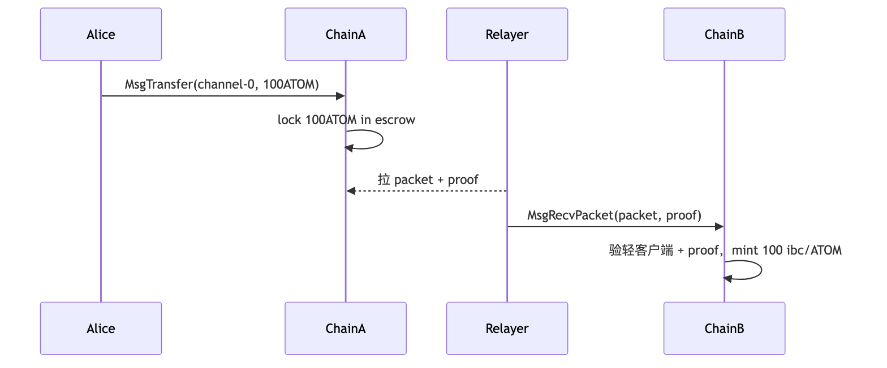
信任模型：信任 chain A/B 各自共识 + light client 代码，不信任 relayer。
自检三问： 1. app-chain 的"主权"代价是什么？— 自己招验证人集合、自己造工具链、自己接入 IBC；Interchain Security 可以借用 Cosmos Hub 安全降低门槛。 2. IBC 为什么不是"多签托管桥"？— 它让每条链在对端跑一份轻客户端，relayer 只搬运 packet + proof，链上自己验。信任在共识与 light client 代码，而非 relayer。 3. CometBFT 和 Tendermint 是什么关系？— 同一套 BFT 共识引擎，原 Tendermint Inc 与 Cosmos Hub 治理摩擦后改名 CometBFT；commit 即最终，~3 s。
速记卡片： - 每应用一条链，链间 IBC 互通 - Cosmos SDK = Go 模块；CosmWasm = Rust 合约；Evmos/Cronos = EVM - CometBFT 共识 3 s 最终 - IBC Eureka v10 已把 Ethereum 接进生态
下一步：动手 ignite scaffold chain 跑通本地链 → 读附录 B（Cosmos SDK / CosmWasm 详）/ G（IBC Eureka ZK 细节）。
TL;DR：Bitcoin = 现金信封。没有账户余额，只有 UTXO（未花输出）。Script 是栈式语言，故意不图灵完备。Taproot 让复杂脚本在链上看起来像普通转账，Ordinals/Runes 建在这上面。
场景钩子：2023 年 1 月，工程师 Casey Rodarmor 公布 Ordinals——给每一聪 BTC 编号，把任意字节塞进 Taproot witness。Bitcoin Core 老炮们当场炸锅：Luke Dashjr 公开骂"这是攻击 Bitcoin"，但市场不听：3 个月内 inscription 千万级，链费打到 100 sat/vB，矿工一边骂一边收 fee。这是 Bitcoin 历史上最大的文化分裂。
Bitcoin 没有"账户余额"。链上只有 UTXO（Unspent Transaction Output）——每笔收款生成一个"锁住的输出"，花费 = 提供解锁脚本把它打开，同时生成新的输出。钱包把你名下所有 UTXO 的 satoshi 加起来显示为"余额"。
# 标准 P2PKH 锁定脚本（spending condition）
OP_DUP OP_HASH160 <pubkey_hash> OP_EQUALVERIFY OP_CHECKSIG
# 解锁脚本（witness）提供:
<sig> <pubkey>
# 栈机验证 sig 对 pubkey 有效，且 pubkey 哈希匹配
BIP-340/341/342（2021-11 激活）：
结果：Lightning channel close、DLC、BitVM 桥在链上看起来与普通转账一模一样。
自检三问： 1. 为什么 Bitcoin 没有"账户余额"？— 链上只有 UTXO；钱包把你名下所有未花输出的 satoshi 加起来显示为余额。每次花费就是消耗 UTXO + 生成新 UTXO。 2. Taproot 的 key-path 和 script-path 各用在什么时候？— 合作时（多方都签）走 key-path，链上看起来就是单签 64B；协议失败 / 单方逃生时才暴露 script-path 的脚本树。 3. 为什么 Script 故意不图灵完备？— 安全边界 + 静态分析可行；任何"复杂计算"靠 BitVM 2 / Citrea / Lightning / Stacks 这些 L2 在链下做，链上只验证结果。
速记卡片： - UTXO = 现金信封，无账户状态 - Script 是栈式语言，故意非图灵完备 - Taproot 三件套：Schnorr / MAST / key-path vs script-path - Ordinals / Runes / BitVM / Babylon 全建在 Taproot 上
下一步：动手 code/bitcoin/ 构造 P2TR 交易 → 读附录 E（Lightning/LDK、BitVM 2、Citrea、Stacks、Babylon、RGB）。
TL;DR：必须粗通四族，至少深入一族。以下建议针对已熟练 EVM 的工程师。
场景钩子：2025 年底，一个朋友面试三家：Solana DeFi 团队报 35w 美元 + token、Cosmos RWA 团队报 22w + 长期股权、Bitcoin BitVM 团队报 28w 美元但"工程师极度稀缺，五年内不愁项目"。他纠结了两周，最终选 Bitcoin——理由是"Solana 五年后也许还在，但 BitVM 这种窗口期只在 2025-2027"。选链 = 选未来三五年的简历坐标，比月度涨跌重要得多。
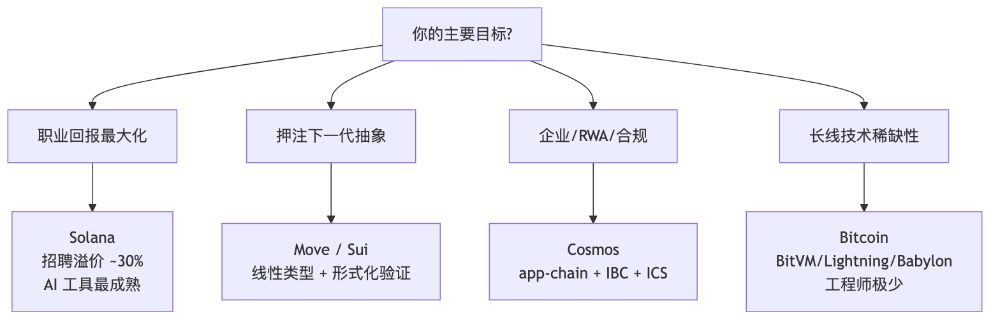
职业回报 → 先学 Solana（Anchor + 一个 mainnet 部署）。SVM 外延到 Eclipse/MagicBlock，一份技能多条链用。
长线稀缺 → 学 Bitcoin 比学第三个 EVM L2 更值钱。BIP-340/341/342 + LDK + BitVM 论文，五年不愁项目，工程师极少。
下一代抽象 → Move/Sui。资源类型 + Move Prover 形式化验证是软件工程未来方向。生态体量仍小但增速快。
企业/合规/RWA → Cosmos（dYdX、Babylon、Neutron）。app-chain + IBC Eureka + ICS 是 B2B 友好全套方案。
不要做的事：同时学 5 条链（样样松）；追每周新链（看 GitHub 提交活跃度 + 真实 TVL，不看价格）；all-in EVM（5 年后变成区块链领域的 PHP 开发者）。
| 目标 | 4 h/周 | 8 h/周 |
|---|---|---|
| 找下一份工作 | Solana 基础（Anchor） | Solana 深 + 1 个 mainnet 项目 |
| 做 C 端产品 | Solana / TON 任一 | + Solana Mobile 或 TON Mini App |
| 押注下一代抽象 | Sui Move counter | + Move Prover / 完整 DeFi 协议 |
| RWA / 机构 | Cosmos + IBC | + CosmWasm + ICS + 起 app-chain |
| 安全 / 基建 | Bitcoin Taproot 基础 | + LDK / BitVM 论文精读 |
学透抽象比"会写代码"重要。Solana"显式账户列表"、Move"线性类型"、Bitcoin"UTXO + Script"、Cosmos"app-chain"——理解这四个概念，任何新链 30 分钟上手。
自检三问： 1. 你的"主要目标"是什么？— 职业回报 / 押注下一代抽象 / RWA 合规 / 长线技术稀缺性。先确定这个再选链。 2. "同时学 5 条链"为什么是错的？— 每族都有自己心智模型，浅尝辄止只会让你简历好看，面试一问就漏。至少深入一族才有议价权。 3. 怎么判断一条链值不值得学？— GitHub 提交活跃度（最近 90 天）+ 真实 TVL（DeFi Llama 实际锁仓）+ 招聘市场（LinkedIn / CryptoJobs 周新增岗位）。不看价格。
速记卡片： - 职业回报 → Solana - 下一代抽象 → Move/Sui - 企业 / RWA → Cosmos - 长线稀缺 → Bitcoin - 红线：同时学 5 条链 / 追每周新链 / all-in EVM
下一步：选 1-2 条链 → 按 M5.3 时间表分配每周学习 → 6 个月做一个 mainnet 项目放进简历。
自检三问： 1. 写过 EVM 的人能选 1-2 条非 EVM 链吗？— 是。M5.2 给了 5 条具体路径。 2. 主线有没有跑进 16+ 链详细？— 没有。TON/NEAR/JAM/Cardano 等统一放附录 F。 3. 主线有没有"显然"？— 没有。共识细节引用模块 02，性能基准放附录，主线只讲心智模型 + 最小代码 + 选型。
学习路径图：
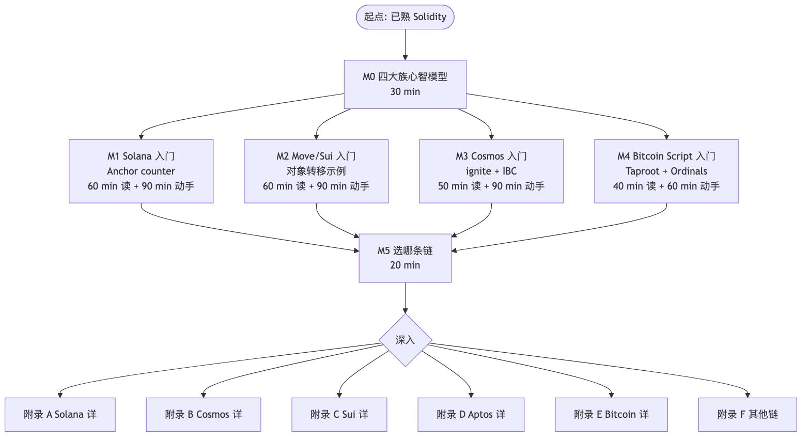
以下各章为深水区附录，对应目录中附录 A–G。读者可在确定目标链后按需深入。
场景钩子：2024 年初，一个老 EVM 工程师同时拿到三家公司的面试题。Solana 公司让他解释为什么转账要"显式列账户"；Cosmos 公司让他设计一条 RWA 应用链；Sui 公司让他用线性类型重写 ERC-20。他三道全错——不是不会写代码，而是心智模型不对：他在用"合约 + mapping"的脑回路看五个完全不同的世界（含其他主流）。本章先把这五套世界观摆上桌：Solana 把 EVM"通用服务器"做到极致，Cosmos 让每个应用自己当链，Move 把资产做成编译期不可复制的对象，Bitcoin 干脆故意不图灵完备，其他主流（TON/NEAR/Polkadot/Cardano 等）作为附录单列。理解这几种"反 EVM"动机，才能读懂本模块主线 + 附录。
EVM 解决的是"通用应用服务器"问题；其他生态要么把这个问题做得更极致（Solana），要么换个问法（Cosmos、Move、Bitcoin）。
当下（2026-04）格局总表：
| 生态家族 | 主语 | 共识 | 执行模型 | 主语言 | 代表网络 / 代币 |
|---|---|---|---|---|---|
| Solana 系 | "高性能单链" | PoH + Tower BFT (PBFT-inspired) | 账户模型 + Sealevel 并行 | Rust (Anchor / Native) | Solana, Eclipse(SVM-on-ETH), MagicBlock |
| Cosmos 系 | "应用即链" | CometBFT (Tendermint) | 应用链 + IBC | Go (SDK) / Rust (CosmWasm) | Cosmos Hub, Osmosis, dYdX, Celestia, Berachain, Babylon, Neutron |
| Move 系 | "资源型语言 + 类型安全" | Mysticeti (Sui) / Jolteon (DiemBFT v4, HotStuff 派生) + Block-STM 执行 | 对象 (Sui) / 全局存储 (Aptos) | Move | Sui, Aptos, Movement, Initia |
| Bitcoin 系 | "极简内核 + L2 套娃" | Nakamoto PoW | UTXO + Script + Taproot | Script / Clarity / Rust (LDK) | Bitcoin, Lightning, Stacks, Citrea, Babylon, Rootstock, RGB |
| 其他主流 | （混合 / 实验形态） | 各种 | 各种 | 各种 | TON, NEAR, Polkadot/JAM, Cardano, Algorand, Tezos, ICP, Filecoin, Tron, Hedera, Sei v2, Monad, Hyperliquid, MegaETH |
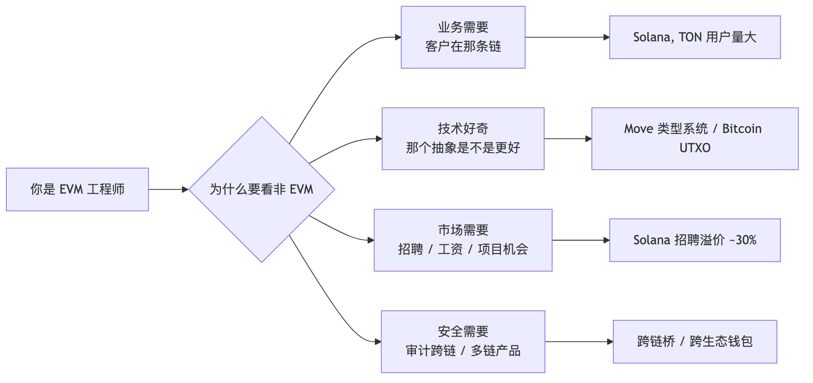
锚 1：Solana 的"账户" ≠ EVM 的"地址"。它是带 owner program 的一段裸字节。
锚 2：Cosmos 的"链" ≈ 一个独立 OS。app chain 上线 = 部署应用 + 启验证人；不像 EVM 部署合约。
锚 3：Move 的"资源" ≠ 余额。它是带 ability 系统的对象（社区习惯叫"线性类型"，严格说更接近仿射类型 affine——不带 copy 不能复制、不带 drop 必须显式消耗、必须有 key/store 才能落 storage），编译期保证不可复制不可凭空销毁。
锚 4：Bitcoin 的"账户余额"是个谎言——链上只有 UTXO（未花输出）；钱包只是把它们加起来给你看。
锚 5：每个生态都有自己的"以太坊基金会"。学非 EVM = 要重新建立一套官方信源。
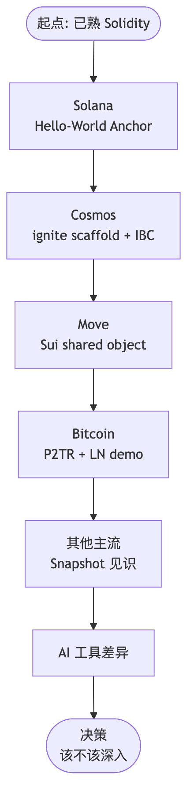
预计耗时（动手版）：
| 阶段 | 阅读 | 动手 |
|---|---|---|
| Solana 章 | 60 min | 90 min |
| Cosmos 章 | 50 min | 90 min |
| Move 章 | 60 min | 90 min |
| Bitcoin 章 | 70 min | 90 min |
| 其他 + AI | 40 min | 30 min |
| 合计 | ≈ 4.5 h | ≈ 6.5 h |
场景钩子：2017 年 Anatoly Yakovenko 在高通做 4G 基带固件，长期与硬件实时性死磕。他写下一份白皮书，主张区块链的瓶颈是"全网协调时钟"——所以应该把时钟做成任何节点都能本地验证的密码学对象（PoH），再把状态拆到无数个互不相干的账户里并行写。这两个直觉合在一起，就有了 Solana。代价是：在 EVM 里"状态属于合约"的常识，在这里完全反过来——状态属于账户，合约只是个"有写权限的程序 ID"。下面这段心智反转是后续 12 章的总开关。
类比图像：EVM 像一座中央仓库（合约自带库房，里面 mapping 摆一排排架子）；Solana 像一座自助寄存柜——每个柜子（账户）独立编号，柜门上写"哪个程序有钥匙"（owner），合约本身只是路过来开柜子的人。
在 Solana 上，所有东西都是账户——钱包、token 余额、合约本身、每个 NFT 都是账户。账户里只有裸字节 (data: Vec<u8>) + 一个 owner 字段标明哪个 program 有权写入。
EVM 世界：
合约 A 内部:
mapping(address => uint256) balances; // A 的私有数据
合约 B 想看 A 的 balance? 只能调用 A 暴露的 view 函数
Solana 世界：
mint 账户 ← owner = SPL Token Program
token 持有账户 X ← owner = SPL Token Program, data 里写 (mint, owner_pubkey, amount)
token 持有账户 Y ← owner = SPL Token Program, data 里写 (mint, owner_pubkey, amount)
DEX 撮合账户 ← owner = DEX Program
solana-sdk）pub struct AccountSharedData {
pub lamports: u64, // 余额，1 SOL = 10^9 lamports
pub data: Vec<u8>, // 状态字节，长度由 init 时指定
pub owner: Pubkey, // 哪个 program 拥有 data 写权限
pub executable: bool, // 是不是可执行的 program (BPF 字节码)
pub rent_epoch: Epoch, // rent 相关，2.x 后基本是 sentinel
}
逐字段拆解：
| 字段 | 类比 EVM | Solana 特有点 |
|---|---|---|
lamports |
EOA 的 ETH 余额 | 每个账户都有，包括合约状态账户 |
data |
合约 storage | 是裸 bytes，不是 mapping，长度提前定 |
owner |
（没有对应） | 决定谁能写这段 data；用户 EOA 的 owner = system_program |
executable |
extcodesize(addr) > 0 |
显式 flag，不靠代码长度推断 |
rent_epoch |
（没有对应） | 历史遗留，2.x 后基本不用 |
Solana 的转账 = 让 SPL Token Program 改两个 token 账户里的 amount 字段。
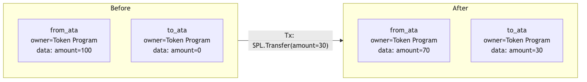
关键点：
from_ata、to_ata 都是 ATA（associated token account），地址由 (wallet, mint) PDA 派生——
钱包地址 + 代币 mint 地址 → 唯一确定一个 ATA 地址。owner == SPL Token Program 保证——其他 program 想动 amount 字段会被 runtime 拒绝。Transaction {
signers: [from_owner_keypair], // 必须签的私钥
account_keys: [ // 事务全局账户表
from_ata, // [w] 可写
to_ata, // [w] 可写
from_owner, // [s] 签名者
spl_token_prog, // [r,x] 只读，可执行
],
instructions: [
Instruction {
program_id: spl_token_prog, // 调用谁
accounts: [from_ata, to_ata, from_owner],
data: borsh::serialize(TransferIx { amount: 30 }),
},
],
}
数字记忆点：单笔 Solana 事务的网络包 ≤ 1232 字节（1280 MTU - 头）。
后果：
PDA 一句话：PDA（Program Derived Address）是故意构造在 ed25519 曲线之外的地址（off-curve），因此没有对应的私钥能签名——只有派生它的 program 可以用 invoke_signed 代为签名。bump 是从 255 开始递减搜索的 nonce：把 (seeds, bump) 喂给 SHA256 直到结果落在曲线外，找到的第一个有效值即为 canonical bump。生产代码里始终用 canonical bump 并把它存进账户，避免每次重算 find_program_address（开销 ~10k CU）。
Q1：Solana 事务为什么必须显式列出账户？这与并行执行是什么关系？
Q2：PDA（Program Derived Address）和普通账户的根本区别是什么？为什么需要 bump？
Q3：mint 的
mint_authority设成 EOA vs 设成 PDA，分别意味着什么？什么时候选哪个？
场景钩子：2017 年 Anatoly 在 Loom 第一次画 PoH 草图时，跟同事 Greg Fitzgerald 解释："想象沙漏——只不过是密码学沙漏。下面那粒沙没漏完，上面这粒就不可能存在。"SHA-256 是单线程不可并行的，把它当作"沙漏的下一粒沙"就拿到了一条全网都能本地验证的时间轴——共识协议不再需要花一半时间互相喊"现在几点"。这就是 PoH。常被人误解为"PoH 替代了 PoS"，完全不对：PoH 只是共识下面的时钟。
共识基础与 Tower BFT 完整对比见模块 02 §8.2。本节只讲 PoH 在 Solana 系统里独有的东西：它不是共识，是写在共识下面的时钟。
PoH = 严格顺序的 SHA-256 哈希链：$h_{n+1} = \text{SHA256}(h_n)$（含事务时 $h_{n+1} = \text{SHA256}(h_n \,|\, \text{tx_data})$，事务被不可篡改地嵌入时间轴）。SHA-256 不可并行，leader 把事务 hash 喂进去就把它"钉"在这条链的某个位置。
为什么这件事有用——共识协议要交换"现在几点"，O(n²) 通信。Solana 让 PoH 隐含全部时序，共识只需投"哪条 fork"。三个直接红利：
常见误解："Solana 用 PoH 替代了 PoS"——错。共识仍是 Tower BFT（PoS + 指数 lockout），PoH 只决定"事务在 leader 视角下的先后"。
Q1：leader 故意提前 PoH 时钟（多算几粒沙），后续验证人能发现吗？怎么发现？
Q2：PoH 的"单线程不可加速"为什么是优势而不是缺陷？
Tower BFT 算法骨架与 PBFT/CometBFT 横向对比见模块 02 附录 A.8（PBFT 系）/ §7（HotStuff）/ §8（Solana）。本节只讲 Solana 工程师必须知道的两件事：finality 数字和 Jito NCN。
Finality 数字（用来回答"我等几秒可以发货"）：
2025 年起 Jito 把"Solana 上的 BFT 共识能力"打包成 service：
NCN ≠ EigenLayer AVS：EigenLayer 是 stake-restake——同一份 ETH 质押被多个 AVS 约束 slash 域。Jito NCN 是 operator-reuse——复用 Solana 验证人节点（operator）跑额外共识轮，安全押金用独立 vault token（JitoSOL/JTO），与 Solana 主网共识 stake 不共享 slash。EigenLayer 重用 stake，Jito 重用 operator。
Q1：NCN 与 Cosmos 的 Interchain Security 在"借安全"思想上有何相似？slash 域上有何不同？
场景钩子：EVM 的并行执行像北京二环——所有车（事务）都挤在一条路（合约状态）上，谁也不知道谁要去哪儿，只能排队。Solana 的解法是：进城前先填申报表——这辆车要去 1 号停车场、2 号停车场、3 号停车场（账户列表）。调度器一看：A 车去 1、2 号；B 车去 3、4 号；互不冲突 → 直接分到两条车道并行开。漏填一个停车场 = 海关直接拒入境（runtime 拒绝），没有"宽容退化为串行"这种事。这种严格是 Solana 把账户模型做到极致后的必然代价：要拿"高速公路"的吞吐，就得忍"申报表"的繁琐。
Sealevel 要求事务静态声明所有账户，调度器据此在执行前构造依赖图，互不冲突的事务分到不同 CPU 核并行执行。没填全 = runtime 拒绝入队。
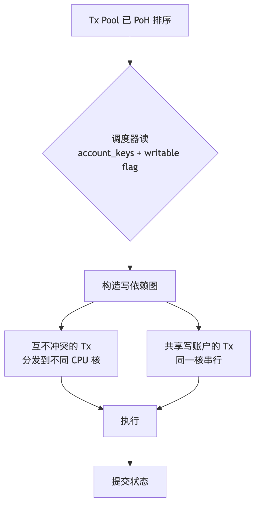
| 思路 | 代表链 | 何时确定冲突 | 失败模式 |
|---|---|---|---|
| 静态声明 | Solana Sealevel | 事务进入前 | 漏列账户 → runtime 拒绝 |
| 对象隔离 | Sui | 事务进入前（从对象 owner） | owned 对象冲突极少 |
| 乐观并行 | Aptos Block-STM、Monad、Sei v2、Berachain V2 | 事后检测 | 冲突回滚重跑 |
| 串行 | Ethereum、BSC、Polygon PoS | n/a | 简单但慢 |
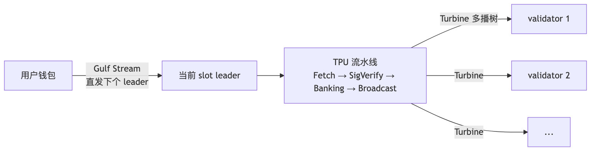
无传统 mempool——事务直接路由到下几个 leader（schedule 提前计算好）： - MEV 发生在 leader 排序权上（Jito 做的就是这一层），不像 EVM 是 mempool 抢跑 - 出块速度 400 ms / slot
Q1：Sealevel 漏列账户为什么 runtime 拒绝而不是默认串行？这种严格性对开发体验意味着什么？
Q2：相比乐观并行（Aptos / Monad），静态声明在何种 workload 下吃亏？
场景钩子：2021 年 Armani Ferrante 在 Serum 撸 native Solana 程序时崩溃了——一个简单的转账要写 200 行账户校验、序列化、PDA 派生，80% 是机械样板。他用一个周末撸出 Anchor 第一版宏，把这些样板全塞进
#[derive(Accounts)]。社区接得飞快：3 个月内 Solana 上 80% 新项目用 Anchor，从此"写 Solana = 写 Anchor"成为默认。这是 Solana 史上最重要的工程师工具，也是非 EVM 世界少见的"DSL 把心智门槛打下一档"的成功案例。
Anchor (solana-foundation/anchor，本教程用 0.31.1；Anchor 1.0 已发布但生态尚未全量迁移，0.31.1 仍是主流兼容版本) 用 Rust 过程宏把指令分发、账户校验、序列化、PDA 派生声明化，省去 60-70% 手写代码。
programs/counter/src/lib.rs ← Rust 程序，用 Anchor 宏写
target/idl/counter.json ← anchor build 自动生成的 IDL
tests/counter.ts ← TypeScript 客户端，用 IDL 做类型化 RPC
code/solana/programs/counter/src/lib.rs）use anchor_lang::prelude::*;
declare_id!("Cou1terXXXXXXXXXXXXXXXXXXXXXXXXXXXXXXXXXXX1");
#[program]
pub mod counter {
use super::*;
/// 初始化属于 authority 的 counter PDA。
/// 种子: ["counter", authority.key()]
pub fn initialize(ctx: Context<Initialize>) -> Result<()> {
let counter = &mut ctx.accounts.counter; // 拿可变引用
counter.authority = ctx.accounts.authority.key();
counter.count = 0;
counter.bump = ctx.bumps.counter; // 保存 bump 省 gas
Ok(())
}
/// 自增 1，仅 authority 可调
pub fn increment(ctx: Context<Increment>) -> Result<()> {
let counter = &mut ctx.accounts.counter;
counter.count = counter.count
.checked_add(1)
.ok_or(CounterError::Overflow)?; // 显式溢出检查
Ok(())
}
}
#[derive(Accounts)]
pub struct Initialize<'info> {
#[account(
init, // 这次事务才创建
payer = authority, // 谁付 rent
space = 8 + Counter::INIT_SPACE, // 8B discriminator + 数据
seeds = [b"counter", authority.key().as_ref()],
bump, // 自动找 canonical bump
)]
pub counter: Account<'info, Counter>, // 自动反序列化 + 校验
#[account(mut)]
pub authority: Signer<'info>, // 付 rent 要标 mut
pub system_program: Program<'info, System>, // create_account CPI
}
#[derive(Accounts)]
pub struct Increment<'info> {
#[account(
mut, // 要写
seeds = [b"counter", authority.key().as_ref()],
bump = counter.bump, // 用保存的 bump，便宜
has_one = authority, // 编译期生成 owner 校验
)]
pub counter: Account<'info, Counter>,
pub authority: Signer<'info>,
}
#[account]
#[derive(InitSpace)]
pub struct Counter {
pub authority: Pubkey, // 32 B
pub count: u64, // 8 B
pub bump: u8, // 1 B
}
#[error_code]
pub enum CounterError {
#[msg("counter overflow")]
Overflow,
}
| 宏 / 属性 | 等价手写代码 |
|---|---|
#[program] |
生成指令分发函数（match 头 8 字节 discriminator） |
#[derive(Accounts)] |
生成账户结构体的 borsh 反序列化 + 校验 |
init, payer, space |
展开成 system_program::create_account CPI + 写 8B discriminator |
seeds, bump |
展开成 Pubkey::find_program_address 验证 |
has_one = authority |
编译期生成 counter.authority == authority.key() 检查 |
Account<'info, T> |
反序列化 + 校验 owner == 本程序 + 校验 discriminator |
Signer<'info> |
校验 is_signer == true |
Anchor 0.31.1 相对 0.30.x 的主要变化是栈使用优化 + Solana v2 工具链兼容。0.30 的 IDL 用 SPL Account Compression + DAS 索引器普遍能识别，0.31 IDL 格式向后兼容。Anchor 1.0 已发布（2026-04 初），但生态（钱包、索引器、第三方框架）尚未全量迁移；本教程用 0.31.1 兼容主流。
等价 native 实现见 code/solana/native/lib.rs。生产里什么时候放弃 Anchor：
学习路径：先 Anchor → 读 Phoenix DEX / Mango v4 native 源码 → 看穿 Anchor 宏展开。
Q1：Anchor 的
has_one约束在编译期生成什么代码？为什么它比 runtime require 更安全？Q2：什么时候 Anchor 的"自动反序列化"是缺点而不是优点？
场景钩子：Anchor 把入门门槛打下来了，但有一群人不买账：高频做市商。Phoenix DEX 的撮合内核每多一行 Anchor 宏展开，就多消耗几百个 CU；二进制大点 10 KB，链上部署租金就多一笔。2024 年 Anza（Solana Foundation 工程团队）拍桌子做 Pinocchio：零依赖、零拷贝、no_std，hello-world 从 5000 CU 砍到 600 CU，二进制从 100KB 砍到 5-10KB。Anchor 是给 90% 工程师用的；Pinocchio 是给最后 10% 极致优化派的——读 Phoenix / Mango v4 / Jupiter 内核之前先读它。
Pinocchio（Anza 维护，2024-2025 兴起）是零依赖的 Native Rust 框架，专为 CU 和二进制大小敏感的程序设计。无需 solana-program crate，账户和指令数据以字节切片零拷贝读取。
| 维度 | Anchor 1.0 | 传统 Native (solana-program) |
Pinocchio |
|---|---|---|---|
| 依赖项 | 多（anchor-lang、solana-program、borsh...） | 1（solana-program ~150 个传递依赖） | 0（no_std） |
| 反序列化 | borsh（带堆分配） | borsh（带堆分配） | 零拷贝，在原 byte slice 上读 |
| 二进制大小 | 100+ KB 起 | 60+ KB 起 | 可低至 5-10 KB |
| CU 消耗（hello-world） | ~5,000 CU | ~3,000 CU | ~600 CU |
| 学习曲线 | 中等（宏多） | 高（手写一切） | 高（手写更细） |
| 适用场景 | 90% 应用 | 性能敏感 + Anchor 不够灵活 | 极致优化 + 链上基础设施 |
#![no_std]
use pinocchio::{
account_info::AccountInfo, entrypoint, msg,
program_error::ProgramError, pubkey::Pubkey, ProgramResult,
};
entrypoint!(process_instruction);
pub fn process_instruction(
_program_id: &Pubkey,
accounts: &[AccountInfo],
data: &[u8],
) -> ProgramResult {
// 第一字节当作 discriminator（不像 Anchor 用 8B）
match data.first().ok_or(ProgramError::InvalidInstructionData)? {
0 => initialize(accounts),
1 => increment(accounts),
_ => Err(ProgramError::InvalidInstructionData),
}
}
fn initialize(accounts: &[AccountInfo]) -> ProgramResult {
let counter = &accounts[0];
let mut data = counter.try_borrow_mut_data()?;
if data.len() < 8 {
return Err(ProgramError::AccountDataTooSmall);
}
data[..8].copy_from_slice(&0u64.to_le_bytes()); // 直接写裸字节
msg!("init");
Ok(())
}
fn increment(accounts: &[AccountInfo]) -> ProgramResult {
let counter = &accounts[0];
let mut data = counter.try_borrow_mut_data()?;
let mut buf = [0u8; 8];
buf.copy_from_slice(&data[..8]);
let v = u64::from_le_bytes(buf).checked_add(1).ok_or(ProgramError::ArithmeticOverflow)?;
data[..8].copy_from_slice(&v.to_le_bytes());
Ok(())
}
✅ 适合： - 高频 DEX / 撮合引擎核心程序 - 大型 program 的热路径（比如 SPL Token Program 本身） - 需要 < 1 KB 二进制的"嵌入式"程序（比如 Pyth oracle 的更新指令） - 对 IDL 兼容性无要求（不需要 web 前端自动调用）
❌ 不适合： - 一般 dApp 业务逻辑（Anchor 足够） - 团队里没有 Native Solana 经验 - 需要 IDL 给前端做类型生成（Pinocchio 没有 IDL 工具）
Q1：Pinocchio 把 discriminator 从 8B 缩到 1B，这有什么收益？什么时候不安全？
Q2：Helius / Drift / Phoenix 等明星项目为什么开始用 Pinocchio 重写？
EVM：每个 ERC-20 是一个独立合约。Solana：一个共享 Token Program，每种代币是一个 Mint 账户，每个余额是一个 Token 账户。
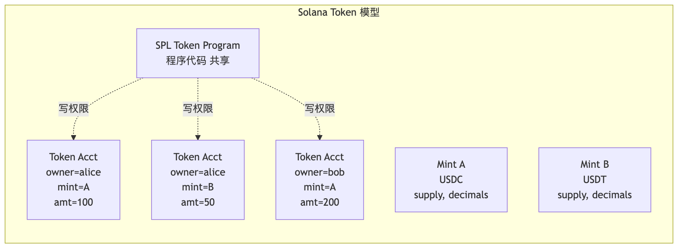
| 对比项 | SPL Token (经典) | Token-2022 |
|---|---|---|
| Program ID | TokenkegQfeZyiNwAJbNbGKPFXCWuBvf9Ss623VQ5DA |
TokenzQdBNbLqP5VEhdkAS6EPFLC1PHnBqCXEpPxuEb |
| 转账钩子 | ❌ | ✅ Transfer Hook（每次 transfer 调用一段自定义 program） |
| 利息累加 | ❌ | ✅ Interest-bearing（按 timestamp 自动 accrue） |
| 转账费 | ❌ | ✅ 协议级 fee on transfer（不是 hack） |
| 隐私转账 | ❌ | ✅ Confidential Transfer（zk + ElGamal） |
| 永久代理 | ❌ | ✅ Permanent Delegate（合规必备） |
| 元数据指针 | ❌ Metaplex 单独存 | ✅ MetadataPointer + 内联元数据 |
| 默认账户状态 | ❌ | ✅ Default Frozen（KYC 友好） |
重要：Token-2022 是并行的另一套 program，不是 SPL Token 升级版。USDC/USDT 仍在 SPL Token；PayPal PYUSD 等合规稳定币大多用 Token-2022。客户端必须区分 owner = TokenkegQ... 还是 TokenzQd...。
（ZK ElGamal Proof Program 2024-Q1 因漏洞下线，2025-Q3 经审计重启；Token-2022 Confidential Transfer 实际可用性看主网启用日期）
Q1：为什么 Solana 把 token 余额做成"独立账户"而不是合约里的 mapping？这种设计在并行执行时有什么收益？
Q2：Token-2022 transfer hook 与 ERC-1363 的相似与差异？
"每个 NFT 一个账户"在百万级 mint 时太贵（rent ≈ 0.002 SOL/账户 → 100 万 NFT 要 2000 SOL）。解法：链上只存 Merkle root，叶子数据外推到 indexer。
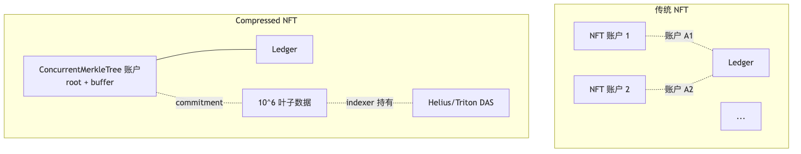
两代演进：
代价： 1. 所有数据要靠 indexer（Helius/Triton/SimpleHash）才能查询，链上只有 root 2. 客户端调用要先从 indexer 拿 proof，再提交到链上 3. indexer 离线 → 资产功能性消失（资产本身在链上，但你看不到也用不了）
| 项目 | 用法 | 规模 |
|---|---|---|
| Drip Haus | 每周给关注者免费空投 cNFT | 累计千万级 mint |
| Helium Mobile | 设备 NFT 标识每一台路由器 | 百万级 |
| Underdog | 给品牌做 cNFT loyalty | B2B 主推 |
| Dialect | 链上消息附 cNFT 邀请 | 高频 |
Q1：cNFT 与 EVM 的 ERC-721A、ERC-6551、ERC-7066 在"省 gas"思路上有何根本不同？
Q2：indexer 离线时资产"功能性消失"——这是不是变相中心化？该如何缓解？
场景钩子：2022 年 Solana 整链停机 7 次，最长一次 17 小时——根因都是同一个：全网 100% 跑同一份 Rust 客户端，一颗 bug 拖垮所有节点。Jump Crypto 的 Kevin Bowers 当时是芝加哥高频交易工程师，他看不下去：写过纳秒级交易系统的人，怎么能容忍这种单点故障？2022 年底他带队用纯 C 把 Solana 客户端从零写一遍，目标 1M TPS——这就是 Firedancer。2026-Q1 主网激活至今 100% 在线。意义不在 TPS，在客户端多元化：Solana 终于有了 Ethereum 风格的"Geth 挂了还有 Besu"。
2026-04 Solana 客户端版图：
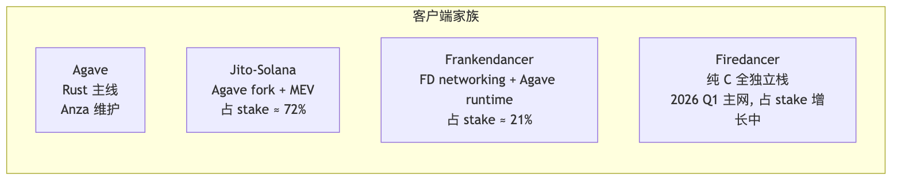
意义：单一客户端是单点风险（Solana 2022-2023 因同一 bug 多次停机）。Firedancer（Jump Crypto 纯 C 重写）目标 1M TPS，2026-Q1 主网上线至今 100% 在线。协议规范（SIMD）比源码更重要；Anchor/BPF 程序不受客户端切换影响。
| 项目 | 状态 |
|---|---|
| Frankendancer 占 stake | ~21%（2025-10） |
| Firedancer 主网激活 | 2026-Q1 |
| 网络在线时间（2026 至今） | 100% |
| 1M USD bug bounty 截止 | 2026-05 |
| Jito-Solana 占 stake | ~72%（仍是主导客户端） |
Stateless Validators (SIMD-0341)：Alpenglow 路线下把归档与共识分离——validator 只验当前 slot 状态，历史交给专门 archive 节点。
Q1：Solana 客户端多元化与 Ethereum 的 Geth/Besu/Erigon/Nethermind/Reth 多客户端在动机上有什么相似？
Q2：纯 C 重写如何降低硬件门槛？这与"去中心化"目标如何相关？
场景钩子：Solana 没有 mempool，事务直发 leader——理论上没有 EVM 那种 mempool 抢跑。但人类的贪婪不会消失：搜索者们想出"私下塞钱给 leader 优先打包"的玩法。2022 年 Jito Labs 的 Lucas Bruder 看到这个灰色市场，干脆把它协议化：明码标价的 tip 通道 + 多笔事务原子打包（bundle）+ tip 按 stake 分给全网验证人。今天 Jito-Solana 客户端占 ~72% stake，几乎所有头部协议都用 Squads 多签管 program upgrade。MEV 没法消灭，但可以阳光化——Jito 是这个观点最成功的实现。
Solana 无 mempool，事务直发 leader。Jito 给 leader 加"VIP tip 通道"——付额外小费排优先队列，小费按规则分给全网验证人。
| 组件 | 作用 |
|---|---|
| Jito-Solana 客户端 | 一个 Agave fork，集成了 MEV bundle 接收器；占 ~72% stake |
| Block Engine | 链下系统，接收用户/搜索者的 bundle（多笔事务原子打包），转发给当前 leader |
| TipRouter NCN | 链下节点共识网络，每个 epoch 末计算 MEV tip 的 Merkle root，链上执行分配 |
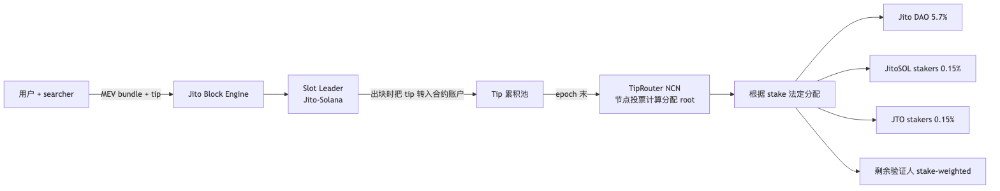
Q1：Jito 的 stake-weighted MEV 分配与 Flashbots SUAVE / Ethereum 的 PBS 在思想上有什么关键差异？
Q2：为什么 Squads 在 Solana 上比在 EVM 上"更不可或缺"？（提示：考虑 program upgrade authority）
场景钩子：2023 年 Solana Mobile 出第一代 Saga 手机时，发布会人到位、媒体齐——但只卖出 几千台。Anatoly 当时打趣："反正 BONK 空投就值回了。" 业界都以为 Solana Mobile 是 Anatoly 的偏执项目，会很快关停。但 2025 年 Seeker（Chapter 2）一出，72 小时预订突破 100 万台，成了 Web3 历史最大硬件发布。秘密武器：跳过 Apple/Google 抽成的 dApp Store + SKR 代币奖励。这个故事说明非 EVM 不只是技术抽象之争，渠道也是一个独立战场。配合 SVM 外延（一次写多链跑），是 Solana 把 EVM 远远抛在身后的两个非技术武器。
| 数据 | 值 |
|---|---|
| 上线 | 2026-01-21 |
| 总供应 | 10B SKR |
| 空投占比 | 30% |
| 首批 claim 用户 | 75,000+ |
| 立即质押率 | 46% |
| 链上累计交易量（200k 设备） | $5B+ |
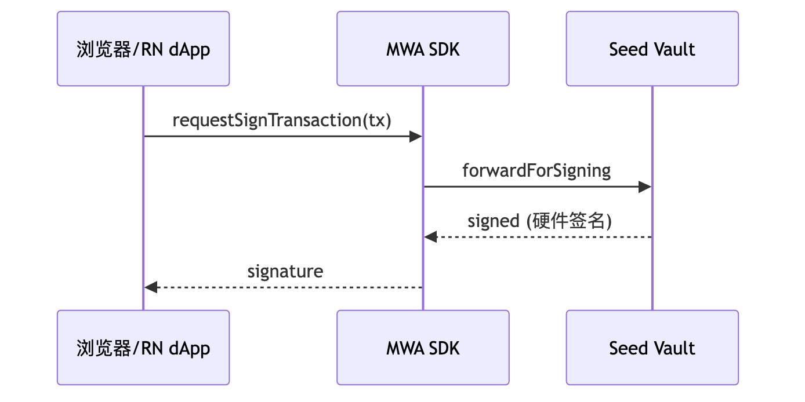
一套 React Native + MWA 可复用 90% web 代码。
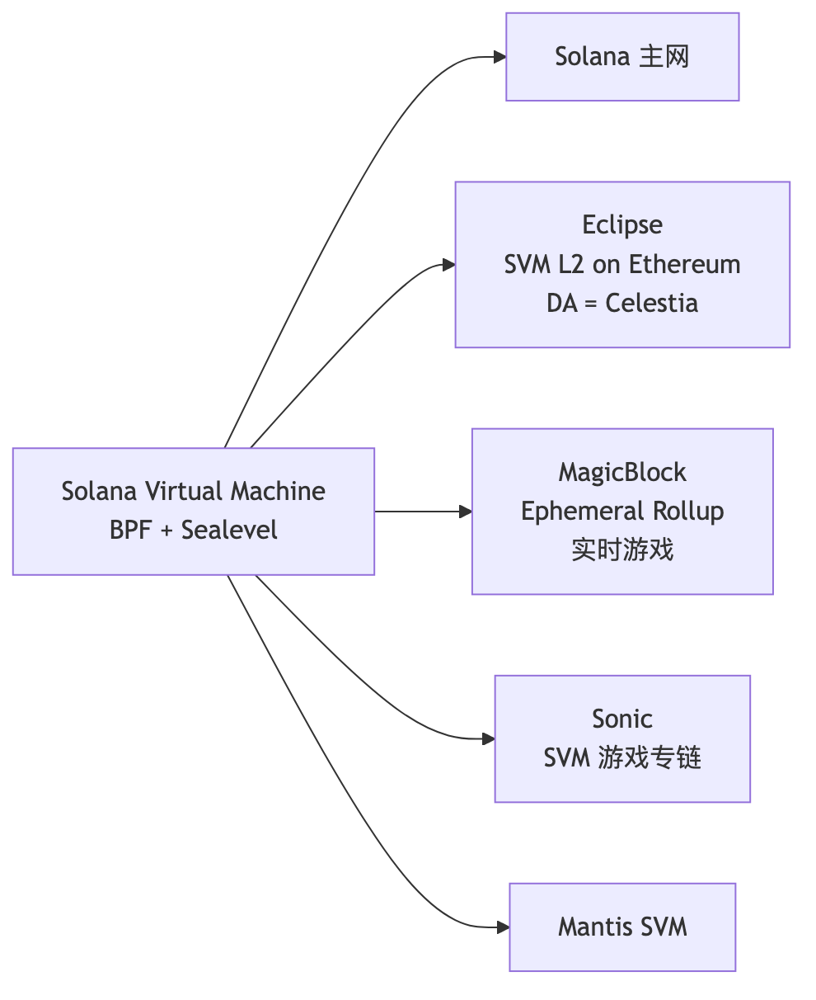
一次 Anchor 编写可跑在 4-5 条链上——非 EVM 里最成功的 VM 标准化。
场景钩子：2022 年 5 月 1 日凌晨 4 点，一个值班工程师盯着 Solana 主网区块号停在了某一个数字上，整整 7 小时一动不动——一群 NFT mint bot 用 600 万笔 tx 灌爆了 leader 流水线。Discord 里全是骂声："这也叫高性能链？" 那一年 Solana 一共停机 7 次。但 2024-02-06 之后，至 2026-04 已连续运行 26 个月，>99.95% 可用——靠的不是某一个魔法补丁，而是七步连环改造：QUIC 替 UDP、stake-weighted QoS、本地 fee market、Firedancer 客户端多元化……生产部署前把这段历史读懂，比读任何官方营销文档都重要。
Solana 早年因为单一客户端 + 高吞吐压力，多次出现整链停机。生产部署前必须知道这段历史：
| 时间 | 持续 | 触发原因 | 修复 |
|---|---|---|---|
| 2021-09-14 | ~17 h | NFT mint bot 制造 400k tx/s，验证人 OOM 崩溃 | 加 fee market、tx 包大小限制 |
| 2022-01 | 数小时 | 同样 bot 引发 duplicate-tx 风暴 | QUIC 替换 UDP（2022-Q2 上线） |
| 2022-04-30 / 2022-05-01 | ~7 h | 6M NFT mint bot tx 灌爆 leader pipeline | stake-weighted QoS（2022-09 上线） |
| 2022-06-01 | ~4.5 h | 持久 nonce 实现的共识 bug | 紧急 patch + 协议修复 |
| 2022-09-30 | ~6 h | 错配的 fork choice rule（misconfigured validator） | Gossip 协议加固 |
| 2023-02-25 | ~20 h | block propagation bug（forwarder 服务循环） | 客户端补丁 |
| 2024-02-06 | ~5 h | BPF loader cache 实现 bug 触发未定义行为 | Hotfix + Firedancer 路线加速 |
2024 Q1 之后的恢复：
选 Solana 上线生产前，把客户端多元化进度、Firedancer share、最近 6 个月有无 leader skip 飙升都列进上线 checklist。
Q1：Solana Mobile 的 dApp Store 跳过 Apple/Google 抽成——这种独立分发渠道在 iOS 主导市场可行吗？
Q2：SVM 外延（Eclipse、Sonic、Magicblock）对开发者意味着什么？是不是让 Solana 开发者技能更可迁移？
场景钩子：截至 2026-04，Solana 主网 50%+ 的交易笔数来自 meme 相关合约（Pump.fun + Raydium + Jupiter aggregator + 各 launchpad），Pump.fun 月活创造者数十万。这个比例在所有公链历史上都没出现过——以太坊在 ICO 高峰期、BSC 在土狗高峰期都没达到。Solana 等于把"meme 发行 + 交易"做成了链级原语。工程师可以鄙视 meme，但不能不懂它的工程结构——做钱包、做聚合器、做安全工具、做 indexer 全都绕不开。
Pump.fun 的核心创新不是"再 fork 一个 launchpad"，而是把 token issuance + price discovery 合并成一个无审批、无 LP 提供者的合约：
虚拟储备 bonding curve：
token 发行总量固定（典型 1B），合约维护两个虚拟储备 reserve_token / reserve_sol，价格由 x * y = k 决定（虚拟 AMM）。每次买入 SOL 换 token：
新 token = reserve_token - k / (reserve_sol + sol_in × 0.99)
费用 1% 抽成：约 0.5% 给协议、0.5% 给创作者（2025-Q4 后引入 creator fee 切换开关）。
典型仓位划分（一个标准 Pump.fun token）：
| 段位 | 比例 |
|---|---|
| Bonding curve 内可买池 + Migration 迁池 | bonding curve 80%（800M）/ Raydium 迁池 20%（200M） |
| dev / creator 自留 | 0%（合约层面禁止 creator 在 migration 前自买） |
Migration 阈值：当 bonding curve 内市值（virtual 估值）达到 ≈ $69k（约 85 SOL 在曲线里），合约自动：
anti-snipe 工程：creator 在 migration 之前不能买自己的 token（合约硬阻止）；很多新 launchpad（Believe、Moonshot、LetsBonk）都抄了这个设计——它解决了 2021 BSC 时代"creator 自买拉盘 + dump"的经典 rug 路径。
Fee 路由（2026-04 当前版本）：单笔 1% fee 全归 Pump.fun 协议；creator fee（最高 0.05% 量级）通过 PumpSwap 迁池后另行结算——四档拆分非公开机制
| Launchpad | 链 | 差异点 | 2026-04 状态 |
|---|---|---|---|
| Pump.fun | Solana | bonding curve + Raydium / PumpSwap migration | 月度 fee revenue 头部，竞争对手抄无可抄 |
| Moonshot | Solana | Apple Pay / Google Pay 法币入金直接铸 meme | 2025 黑马，绕开 web3 钱包 onboarding |
| Believe | Solana | 前 Clanker 联创 2025 创立；强调 creator-first / 推特绑定 | 2025-Q4 上线，月活几万 |
| LetsBonk / Daos.fun | Solana | DAO + meme 混合：贡献金库换 token | DAO meme 子赛道头部 |
| Sun.io | Tron | Tron 自家 meme 发行平台 | 2025 上线；面向中文 Tron meme 用户 |
| Clanker | Base | 自然语言"@clanker 给我发个币" → on-chain | EVM 阵营对标产品，2024 爆款 |
Solana meme 的"rug 模式"不是 EVM 那种 mint authority 留 backdoor（Pump.fun 自动 burn LP 后这条路堵死），而是：
检测工具（与模块 05 附录交叉引用）：
工程师推论：做钱包 / 聚合器 / 交易终端，集成 RugCheck + Bubblemaps API 是 2026 标配——用户在 Solana 上点 swap 之前必看这两项。
| 工具 | 用途 | 生产级别 |
|---|---|---|
| Helius | RPC + indexer + DAS + webhook | 行业标准 |
| Triton | RPC + Yellowstone gRPC（高频订阅） | 顶级 RPC |
| SimpleHash | 跨链 NFT 索引 | NFT 项目首选 |
| Solana Explorer | 官方区块浏览器 | 入门必备 |
| Solscan | 第三方浏览器（更细致的 token analytics） | 替代品 |
| Solana FM | 又一个浏览器，方便看 IDL 解析 | 备用 |
| Birdeye | 交易/价格分析 | meme 交易必备 |
| Jito Block Engine | MEV bundle 提交 | 量化必用 |
| SendAI / Solana Agent Kit | AI agent function-calling | 新兴热门 |
Solana 是非 EVM 里 AI 工具最成熟的生态：语料量大（Anchor 项目 1 万+）、Helius/SendAI/Squads 主动做 AI 集成、Anchor IDL 是 JSON 结构化，LLM 理解成本低。
代表 AI 工具：
实测 LLM 代码质量（基于 2026-04）：
完整代码见 code/solana/。最小跑通路径：
# 1) 起本地 validator（独立终端）
solana-test-validator --reset
# 2) 配置 CLI
solana config set --url localhost
solana-keygen new -o ~/.config/solana/id.json # 没 keypair 时
solana airdrop 5
# 3) 构建 + 拿 program_id
cd code/solana
anchor build
solana address -k target/deploy/counter-keypair.json
# 把输出的 ID 写回 lib.rs::declare_id! 与 Anchor.toml [programs.localnet]，再 build 一次
anchor build && anchor deploy
# 4) 跑测试（mocha + @coral-xyz/anchor 0.31.x 客户端）
pnpm install
anchor test --skip-local-validator
Q1：cNFT 的"链上 root + 链下 leaf"有什么风险？如果 indexer 全部下线，资产还存在吗？
参考答案见 exercises/solana-spl-token/README.md。
下一节 Cosmos 走相反路线：不优化单链，让每个应用自己当链。
场景钩子：2014 年 Jae Kwon 写出 Tendermint 论文，把 PBFT 拍扁成"3 秒 finality 的实用 BFT"。他与 Ethan Buchman 合伙做 Cosmos，喊出"Internet of Blockchains"——每条链都是独立王国，靠 IBC 高速公路互通。理想很美。但 Cosmos 的故事也有黑历史：ATOM 2.0 提案被社区否决、Tendermint Inc 与 Cosmos Hub 治理摩擦后改名 CometBFT、dYdX 跑路了又回来……一直到 2025 年 IBC Eureka 终于把 Ethereum 接进来时，社区才松一口气。app-chain 哲学不是免费午餐：你要主权，就得自己招验证人、自己造工具链、自己跨链。这一章讲为什么有人愿意付这个代价。
类比图像：Solana 像高速公路（吞吐高、车道并行、偶尔堵塞）；Cosmos 像独立王国邦联（每个国家自己的律法，靠条约通商）；Ethereum 像超大型购物中心（每家店共用电梯和保洁，但都得排队）。
以太坊"一条链承载所有应用"（统一状态机 + 共享 gas / 区块 / 拥堵）；Cosmos"每个应用配自己的链"（Osmosis DEX / dYdX 永续 / Celestia DA / Berachain EVM+PoL 各自独立，IBC 互通）——链是 OS，dApp 是服务。
app chain 不是免费午餐：启动 = 招募验证人 + bootstrap 安全（Interchain Security 因此出现）；工具链需自建；IBC 跨链 UX 复杂。大多数项目先在 EVM 验证 PMF，做大了再迁。
Cosmos SDK 是 Go 语言的链开发框架，把链拆成若干 x/* 模块按需 import。
| 模块 | 作用 | 是不是必带 |
|---|---|---|
x/auth |
账户、签名、ante handler | 必带 |
x/bank |
多资产余额、转账 | 必带 |
x/staking |
PoS 质押、验证人集合 | PoS 链必带 |
x/distribution |
出块奖励分配、佣金 | 配合 staking |
x/slashing |
验证人作恶 / downtime 罚没 | 配合 staking |
x/gov |
链上治理、提案、投票 | 几乎所有 |
x/mint |
通胀发行 | PoS 链常带 |
x/ibc |
跨链通信（ibc-go） | 想互联就带 |
x/wasm |
CosmWasm 智能合约引擎 | 想跑合约才带 |
x/upgrade |
链上升级协调 | 强烈推荐 |
x/evm (Evmos/Cronos) |
EVM 兼容 | 想跑 Solidity 才带 |
x/icq |
Interchain Queries | 想跨链读数据 |
x/ica |
Interchain Accounts（host + controller） | 想从 chain A 控制 chain B 账户 |
x/blog/
├── client/cli/ ← 命令行交互
├── keeper/ ← 状态机核心 (read/write store)
├── types/ ← 消息、事件、错误、protobuf 定义
├── module.go ← AppModule 接口实现
└── genesis.go ← 创世状态加载/导出
module 是链内核组件，链启动即在，随链升级；CosmWasm 合约是跑在 x/wasm 上的字节码，链上线后部署。高频/安全敏感/需协议级特权 → module；一般业务逻辑 → CosmWasm。
CometBFT 算法（PBFT 派生、commit 即 final、1/3 BFT 容忍）见模块 02 §6。本节讲两个工程坑：ABCI++ 介入点和 v0.38 / v0.39 选哪个。
ABCI++（v0.38 引入）三钩子：PrepareProposal（leader 出块前重排 mempool、注入 dYdX 撮合 / oracle 价格）/ ProcessProposal（验证人投票前业务级有效性检查）/ VoteExtension（precommit 阶段给 vote 附加 oracle 等数据）。dYdX 把 orderbook 撮合放进 PrepareProposal/ProcessProposal 就是这个机制。
版本选型：2026-04 主流 v0.38（Cosmos Hub / Osmosis / Babylon / Neutron / MANTRA）；v0.39 仍 alpha，生产勿追（Tendermint Inc 与 Cosmos Hub 治理摩擦后 2022 改名 CometBFT，版本节奏仍保守）。
场景钩子：2022 年 Ronin 桥被朝鲜黑客掏走 6 亿美元、2022 年 Wormhole 桥失血 3.2 亿……同一年 Cosmos 上的 IBC 累计搬运了上百亿美元资产，零损失。原因很简单：IBC 不依赖"多签托管 + oracle"这种链下信任，而是让每条链在对端跑一份轻客户端——把"信任桥的节点"变成"信任两条链的共识 + 一段开源验证代码"。2025 年 4 月 IBC Eureka v10 把这套思路延伸到 Ethereum：在 EVM 上跑 CometBFT 验签太贵？那就用 ZK 把它压成一个 200KB 的 proof。第一笔 ATOM ↔ ETH 跨链交易在 2025-03-28 落地。Cosmos 这条赛道唯一没被黑的桥协议，正在吃下整个 EVM 跨链市场。
IBC 核心：每条链在对端跑轻客户端验证真实性，relayer 只搬运不能伪造。IBC Eureka v10（2025-Q1 主网）用 ZK light client 把协议延伸到 Ethereum、Solana 等非 Cosmos 链。
Light Client（chain A 跑 chain B 轻客户端）→ Connection（双向认证）→ Channel（有序 / 无序通道）→ Application（ICS-20 transfer / ICS-27 ICA / ICS-30 mw）。
关键术语：light client（在 chain A 上验证 chain B 区块头/状态证明的代码）/ connection（一对 light client 实例互相认证）/ channel（连接之上的有序消息流）/ packet（channel 上一条消息含 timeout/proof）/ relayer（链下搬运进程：hermes、rly、go-relayer）。
ICS-20 跨链转账流程：Alice → ChainA MsgTransfer lock 1000ATOM 到 escrow + emit SendPacket → relayer 拉 packet+proof → ChainB MsgRecvPacket 验 light client + proof → mint 1000 ibc/HASH voucher 给 Alice + 写 ACK → relayer 把 ack 搬回 ChainA MsgAcknowledgement 清 escrow。
IBC 是 trust-minimized，不是 trustless：信任 chain A/B 各自共识 + light client 代码（ibc-go）。不信任 relayer（relayer 只搬运 proof，链上验证）。chain B 的 ⅔ 验证人作恶 → chain A 上的 light client 也接受错误状态——这是 Interchain Security 出现的原因（让小链共享 Hub 验证人集合）。
三行口诀：v8 是当前主网（配 CometBFT v0.38）→ v9 跳过 → v10 = IBC Eureka（2025-04-10 主网激活，Cosmos ↔ Ethereum ZK light client 直连，无 connection 1-click，首笔 ATOM↔ETH 2025-03-28，覆盖 120+ Cosmos 链 + ETH，目标市值 260B+ USD）→ 2026 Q2-Q3 路线 Solana / 通用 EVM L2 light client。
Q1：IBC Eureka 用 ZK light client 让 Ethereum 能"廉价验证"CometBFT 区块头——这与 LayerZero、Wormhole 的"信任 oracle 集合"设计有什么本质差异？
Q2：如果 chain B 的 ⅔ 验证人作恶，chain A 上的 voucher 会怎样？谁来兜底？
场景钩子：2018 年 Confio 团队的 Ethan Frey 看着 EVM 重入漏洞清单（DAO hack、Cream Finance、Fei……），决定从根上堵住。他在 Cosmos 上写出 CosmWasm：用 WASM 替 EVM bytecode、用 Rust 替 Solidity，关键改动是合约间调用强制异步——sub-message 提交后本笔事务先跑完，reply 回来另算一次执行。这一刀切死了重入攻击整类。代价是写 DEX 撮合得用"事件驱动"思维。Neutron 把这套引擎当作主战场，Osmosis 把它跟 module 混用，今天 Cosmos 上的 DeFi 几乎都跑在 CosmWasm 上。
CosmWasm：Rust 编写、编译成 WASM、部署到任何带 x/wasm 模块的 Cosmos 链。
| 维度 | EVM | CosmWasm |
|---|---|---|
| 字节码 | EVM bytecode | WebAssembly |
| 主语言 | Solidity / Vyper | Rust（极少 AssemblyScript） |
| 入口模型 | 多个 public function | 三个标准入口：instantiate / execute / query |
| 状态访问 | storage slot (32B-32B mapping) | KV store + cosmwasm-storage helpers |
| Gas | 复杂规则 | 单一 gas meter（按 WASM op 计费） |
| 合约间调用 | call / delegatecall / staticcall | sub-message + reply（异步！） |
use cosmwasm_std::{entry_point, DepsMut, Env, MessageInfo, Response, StdResult};
#[entry_point]
pub fn instantiate(_deps: DepsMut, _env: Env, _info: MessageInfo, _msg: InitMsg) -> StdResult<Response> {
Ok(Response::default())
}
#[entry_point]
pub fn execute(deps: DepsMut, _env: Env, info: MessageInfo, msg: ExecuteMsg) -> StdResult<Response> {
match msg {
ExecuteMsg::Increment {} => {
let mut state = STATE.load(deps.storage)?;
state.count += 1;
STATE.save(deps.storage, &state)?;
Ok(Response::new().add_attribute("action", "increment"))
}
}
}
#[entry_point]
pub fn query(deps: Deps, _env: Env, msg: QueryMsg) -> StdResult<Binary> {
match msg {
QueryMsg::GetCount {} => to_json_binary(&STATE.load(deps.storage)?.count),
}
}
CosmWasm 合约间调用异步：sub-message 提交后本笔事务先跑完，reply 回来另算一次。堵死 EVM 重入攻击整类（DAO hack 那种），代价是复杂业务需"事件驱动"思考。
CosmWasm 合约 vs module 决策：需协议级特权（mint 原生币 / 改 staking） → module；多链部署 / 后期升级合约本体 → CosmWasm；要求改一次合约就改链可接受 → module；否则 CosmWasm。
演进：1.x（基础合约引擎）→ 2.0（2024，ICS-20 memo field、IBC hooks 友好、ADR-8 准备）→ 3.0（IBCv2 协议集成，新增 ibc2_packet_send/receive/ack/timeout 入口，与 wasmd 0.61 同步）。Sylvia 框架：类似 Anchor 的合约抽象层，trait-based contract definition，逐步成为 CosmWasm 高级 DSL 首选。
Q1：CosmWasm 异步 sub-message 模型避免了哪类 EVM 攻击？复杂业务时该如何组织代码？
Q2：在何种情况下你会选 module（写进链）而非 CosmWasm 合约？
小链无需自建验证人集合，租用 Cosmos Hub 验证人出块。
| 代 | 名字 | 特点 | 状态（2026-04） |
|---|---|---|---|
| v1 | Replicated Security | 消费链完全共享 Hub 验证人集合 | 已上线（Neutron / Stride 用） |
| v2 / PSS | Partial Set Security（opt-in / top-N） | Hub 验证人选择性参与 | Cosmos Hub 主网逐步迁移 |
| v3 / Mesh | Mesh Security（双向 stake，消费链也质押到 Hub） | Hub↔Osmosis / Stride 双向出借 | Phase 2 测试网（Osmosis/Juno/Akash 协作）；2026 主网未定 |
跨链双向质押，谁的安全谁出钱。与 EigenLayer "统一 ETH 担保所有 AVS"截然不同——Cosmos 走"每条链安全外推 + 内引"路线。
Q：Replicated/PSS/Mesh 三者在去中心化与启动成本上各有什么权衡？Babylon BTC staking 与 ICS/Mesh 是冲突还是互补？
| 链 | 角色 / 特色 | 2026-04 状态 |
|---|---|---|
| Cosmos Hub (ATOM) | 联邦"首都"、ICS provider；ATOM 2.0 改革后定位为安全提供方 | Hub v18+，SDK v0.53 / CometBFT v0.38 / ibc-go v8 |
| Osmosis (OSMO) | 最大 DEX；超流体质押 / Concentrated Liquidity / Token Factory；CosmWasm + module 混合 | 主网 |
| dYdX v4 | 永续合约专链（从 StarkEx L2 迁来）；完全链上 orderbook | 证明 app chain 能扛 DeFi 顶级吞吐 |
| Celestia (TIA) | 模块化 DA 层；Reed-Solomon + DAS | Manta / Astria / Movement L2 用作 DA |
| Berachain (BERA) | EVM 兼容 + Proof-of-Liquidity；三代币（BERA gas / BGT 治理 / HONEY 稳定币） | V2 抛弃 Polaris，改 BeaconKit；详见 §48 |
| Sei v2 / EVM-only | 从 Cosmos+EVM 双栈到纯 EVM L1 | 2026-04-06 至 04-08 迁移完成；详见 §48 |
| Neutron / Stargaze / Injective | 纯 CosmWasm DeFi / NFT 主战场 / 衍生品订单簿 module | 主网 |
| Babylon (BABY) | BTC staking 给 PoS 链借安全 | Phase-1 主网 57k+ BTC（~$4B TVL）；详见 §34 |
| Initia / Allora / Warden / MANTRA / Cronos | Move+Cosmos 双栈编排 / AI 网络 / 链抽象多链密钥 / RWA / CDC EVM 兼容 | 各自主网 |
| 你的需求 | 推荐链 |
|---|---|
| 自由度最高（自己做共识参数） | 自起 chain (Ignite) |
| CosmWasm 合约部署，跨链 DeFi | Neutron / Osmosis |
| NFT 项目 | Stargaze |
| 永续合约 / 衍生品 | Injective / dYdX |
| BTC 安全 | Babylon BSN consumer chain |
| EVM 兼容（保留 Cosmos 共识） | Berachain V2 / Cronos |
| 完全 EVM 化（不用 Cosmos） | Sei EVM-only |
evmOS（EVM-on-Cosmos SDK v8）：第三条 EVM 路径——Berachain V2 是 PoL，Sei v2 是 EVM-only，evmOS 是 SDK 模块插拔。
| 模块化 DA | Celestia / EigenDA | | AI / Agent | Allora / Cocoon (TON) | | 主权但共享安全 | Replicated Security 消费链 |
完整步骤见 code/cosmos/README.md。最小路径：
# 1) 装 Ignite v28
curl https://get.ignite.com/cli | bash
# 2) 一键脚本（创建 blogchain + blog module + post CRUD）
cd code/cosmos
bash bootstrap.sh # 内部依次 scaffold chain / module / list
# 3) 验证
blogchaind tx blog create-post "first" "hello cosmos" --from alice -y
blogchaind q blog list-post
# 4) 自定义：加 1 BLOG 提交费
# 见 customizations/msg_server_post.go.patch
成熟度中等偏弱，落后 Solana 一档。
主要工具：
实测 LLM 代码质量（2026-04）：
Q1：dYdX 从 StarkEx L2 迁到独立 Cosmos 链的核心理由？这与 Sei v2 反向走"回归 EVM"是否矛盾？
Q2：IBC channel close 后，已在对端 chain 上的 voucher token 如何处理？
下一节 Move 系把安全保证下沉到编程语言的类型系统，编译期堵死整类漏洞。
场景钩子：2019 年 Facebook 想做 Libra 稳定币时，技术总监 Sam Blackshear 翻完 Solidity 漏洞库后做了个判断：绝不能让"资产"是个数字。数字可以加可以减、可以"被忘记"——重入、溢出、意外销毁，每一个都源于"余额是个 uint256"。他主导设计了 Move：资产是一种线性类型对象，编译期就禁止复制和凭空丢弃。Diem 项目最终被监管干掉，但 Move 活了下来——核心团队拆成两支：一支做 Aptos（保留 Diem 的"资源挂在 address 下"），一支做 Sui（把资源拆成独立对象，每个对象自带 owner）。两支用同一份语法但几乎不能跨链复用。这是区块链史上罕见的"语言比项目活得更久"的故事。
类比图像：Solidity 的余额像银行存款（一串数字）；Move 的资产像物理金条（必须有人拿在手里，转账 = 把金条搬过去，编译器盯着它绝对不消失）。
Move 把"资产"做成有线性类型的对象——编译期保证不可复制、不可凭空消失，必须显式 transfer / store / destroy。
Solidity mapping(address=>uint256) balances + balances[msg.sender] -= amount 把余额当值（可复制可加减，漏洞重灾区：reentrancy / overflow / 弄丢）；Move 的 Coin<T> 是资源（public struct Coin<phantom T> has key, store { id: UID, value: u64 }，只能 sui::transfer::transfer(coin, recipient) 整个 move 过去）。编译器强制 coin 在函数结束前必须被消耗（transfer / 解构 / 存储），否则编译失败——堵死"凭空铸币 / 凭空消失"整个漏洞类别。
Move 的所有 struct 必须显式声明拥有哪些能力：
| 能力 | 含义 | 典型用法 |
|---|---|---|
copy |
可被复制 | 仅普通值类型（如配置、常量）使用 |
drop |
可被丢弃 | 普通值；资源绝对不能 drop |
store |
可放进其他 struct 内部 | NFT、token 等会被嵌套的资产 |
key |
可作为顶层全局对象 | Sui object / Aptos resource 必带 |
Coin 只有 key, store，无 copy, drop——编译器禁止复制或丢弃，一行能力声明替代了 SafeMath + reentrancy guard。
Q1：Move 的
Coin<T>类型只有key, store、没有copy, drop——这两条限制堵死了哪些 Solidity 漏洞类别？Q2：Diem 项目失败但 Move 活了——这种"语言可独立生存"在区块链史上有先例吗？
场景钩子：Diem 项目 2022 年被美国国会按死，研究院顶级人马（Evan Cheng、Sam Blackshear、Adeniyi Abiodun）决定不给 Meta 打工了——他们出来做 Mysten Labs，把 Move 重写成"以对象为中心"的版本。他们的核心赌注：owned 对象的事务天然不冲突，所以它们可以跳过共识、走 fast path（< 300ms）；只有 shared 对象的写才走 Mysticeti DAG（~500ms）。这跟 Aptos 那支老团队选的"乐观并行"完全反方向：Sui 让类型系统静态保证并行，Aptos 让 Block-STM 运行时检测冲突。一个语言、两条路径、两条主网，至今谁也说服不了谁。
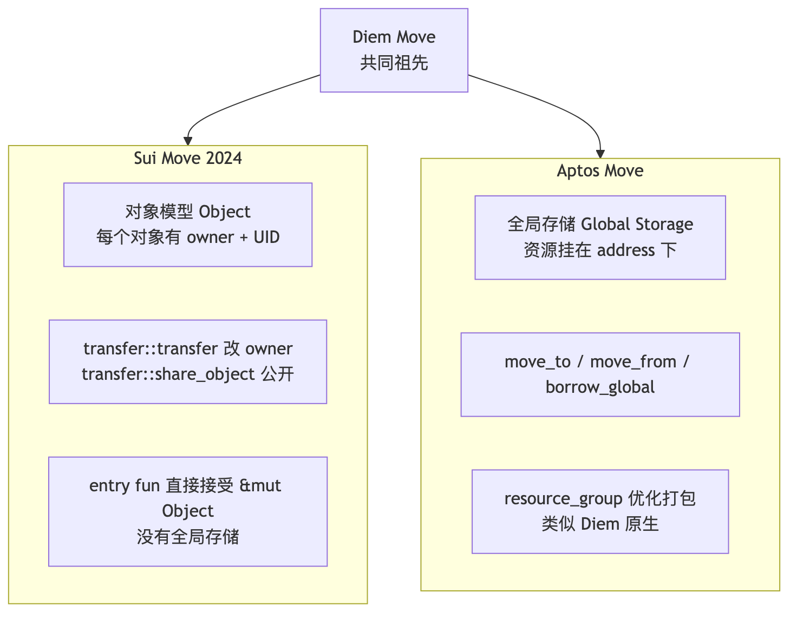
| 维度 | Sui Move | Aptos Move | 翻译成 Solidity |
|---|---|---|---|
| 状态归属 | 每个 Object 自带 owner 字段 | 资源挂在某 address 的 global storage 下 | 状态全在合约里 mapping |
| 创建资产 | object::new(ctx) 拿 UID |
move_to<T>(signer, ...) |
new T() |
| 转账 | transfer::transfer(obj, addr) |
move_from + move_to 改 owner |
mapping[a]--; mapping[b]++ |
| 共享读写 | transfer::share_object(obj) |
资源挂在某固定 address，任何人读，作者写 | mapping(address=>T) |
| 并行执行 | 静态对象隔离（不同 owner 天然并行） | Block-STM 乐观并行（冲突就回滚） | 串行 |
| 共识 | Mysticeti DAG（v2 主网） | AptosBFT v4 + Raptr (2026 路线) | 串行 PoS |
| 形式验证 | Move Prover（实验） | Move Prover（生产用于 framework） | 几乎没有 |
| 主语言版本 | Move 2024 edition | Aptos Move（含 resource_group） | Solidity 0.8.x |
Move 2024 主要变化：public(package) 替代 friend、宏函数 macro fun、enum 类型——Mysten 新代码全用，老 Move 18 文档不适用。
| 包升级 | Package upgrade（不可变 + 新版本指针） | direct upgrade（同地址覆盖） | proxy + impl |
| 标准币 | sui::coin::Coin<T> | aptos_framework::coin::CoinStore<T> | ERC-20 |
| FT 标准（新） | sui::token::Token | aptos_framework::fungible_asset::FungibleStore | — |
Sui 把"全局状态"砸成无数个互不相干的对象——这是静态并行的核心。
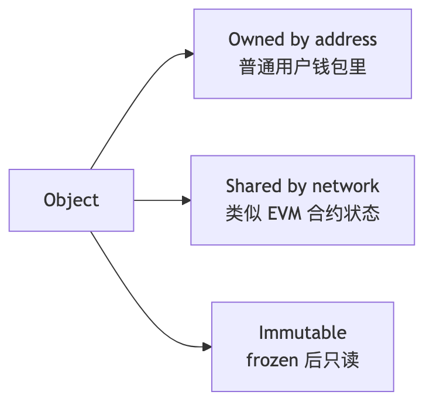
| 类型 | 创建方式 | 可写 | 谁能用作 input |
|---|---|---|---|
| Owned | transfer::transfer(obj, addr) |
是 | 只有 owner |
| Shared | transfer::share_object(obj) |
是 | 任何人（共识层串行写） |
| Immutable | transfer::freeze_object(obj) |
否 | 任何人（仅读，永远不冲突） |
Sui 并行原理：owned 对象的事务天然不冲突，调度器静态判断为独立 → 真正并行。与 Sealevel "显式声明账户列表"思路类似，但 Sui 做成了类型系统级别的保证。
public struct Counter has key {
id: UID, // sui::object::UID, 全网唯一标识
owner: address, // 业务字段，跟所有权字段无关
value: u64,
}
has key 能力：表示这是顶层对象，能成为事务参数UID：分配自全局 ID 池，永不重复，不可复制不可销毁（必须 object::delete(id) 才能丢）has store 能力，不能直接复制public struct AdminCap has key, store { id: UID } // 特权凭证
public entry fun create_protocol(ctx: &mut TxContext) {
transfer::transfer(AdminCap { id: object::new(ctx) }, tx_context::sender(ctx));
transfer::share_object(Treasury { id: object::new(ctx), balance: 0 });
}
public entry fun withdraw(_cap: &AdminCap, t: &mut Treasury, amount: u64) {
// 调用者必须出示 AdminCap 这个对象，才能 borrow_mut t
t.balance = t.balance - amount;
}
Solidity Ownable 用 address public owner + modifier；Sui 把权限做成对象——转让 = transfer::transfer(cap, new_admin)，撤销 = object::delete(id) 销毁 cap，无需 onlyOwner modifier。
完整代码见 code/move/sources/counter.move：
module counter::counter;
use sui::event;
public struct Counter has key { // shared 对象
id: UID,
owner: address,
value: u64,
}
public struct AdminCap has key, store { // owned 凭证
id: UID,
}
public entry fun create(ctx: &mut TxContext) {
let sender = tx_context::sender(ctx);
let counter = Counter { id: object::new(ctx), owner: sender, value: 0 };
let cap = AdminCap { id: object::new(ctx) };
transfer::transfer(cap, sender); // owned: 给 sender
transfer::share_object(counter); // shared: 公开
}
public entry fun increment(c: &mut Counter) {
c.value = c.value + 1;
event::emit(Incremented { counter_id: object::id(c), new_value: c.value });
}
public entry fun reset(_cap: &AdminCap, c: &mut Counter) {
c.value = 0; // 只有持 cap 的人能 reset
}
关键点：
1. 传 cap 即转让权限（Capability 模式）
2. 无 msg.sender，用 tx_context::sender(ctx) 获取发起者
3. shared object 的写走 Mysticeti 共识排序
Mysticeti DAG 算法（Narwhal/Bullshark 派生）见模块 02 附录 A.12 / 附录 D。本节讲 Sui 工程师必须懂的工程后果：owned 对象走 Fast Path 不进共识。
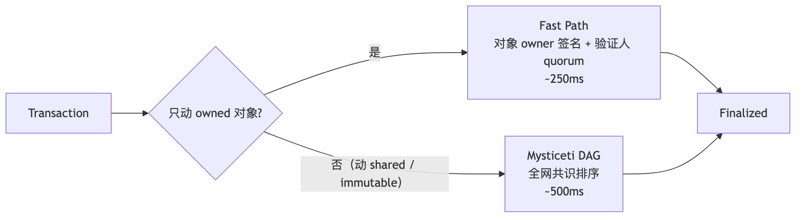
Fast Path 直接的产品后果：钱包转账、NFT 收藏、单玩家游戏状态都该用 owned 对象——p99 < 300 ms；DEX 池子、拍卖、leaderboard 这类多人共写状态用 shared 对象，付出共识排序的 ~500 ms。架构师在第一行 Move 前就要决定哪些状态值得共享。
| 指标 | Mysticeti v1 | Mysticeti v2 | 改善 |
|---|---|---|---|
| p50 latency | 70 ms | 67 ms | -5% |
| p95 latency | 114 ms | 90 ms | -20% |
| p99 latency | 156 ms | 114 ms | -27% |
| 理论 TPS | 200k+ | 200k+ | — |
优先用 owned 对象享 fast path；shared 对象仅在必须共享状态时用（DEX 池子、拍卖、leaderboard）。
Q1：Sui 的 fast path（owned object 不走共识）是它能 < 300ms 的关键——为什么 Solana 没有这种"绕过共识"路径？
Q2：shared object 的写仍要走 Mysticeti 共识——这与 EVM 合约状态写在并发性上有何相同/不同？
场景钩子：Diem 团队解散时，CEO Mo Shaikh 与 CTO Avery Ching 拐弯做了 Aptos——保留 Diem 原版"资源挂在 address 下"的存储模型（用着舒服），但执行层换成了乐观并行 Block-STM：所有事务先假装无冲突并行跑，事后用 multi-version storage 检测冲突，撞了就回滚重排。这条路反过来挑战 Sui："你不需要让用户思考 owned/shared，并行让虚拟机自己处理。"Aptos 2022-10-17 主网；Sui 2023-05-03 主网（差 7 个月，非同月），两家在 Move 标准库、token 规范、共识算法上几乎彻底分家。今天 Sui TVL ≈ 1B、Aptos ≈ 500M——技术上分庭抗礼，市场口碑略有差距。
Aptos 沿用 Diem Move 的"resource lives at an address"风格，资源挂在某个 address 的 storage slot 上，不是独立对象。
module default::counter {
struct Counter has key { // has key 在 Aptos 里 = 能存到 global storage
value: u64,
}
public entry fun initialize(account: &signer) {
move_to(account, Counter { value: 0 }); // 挂到 signer.address 下
}
public entry fun increment(account: &signer) acquires Counter {
let addr = signer::address_of(account);
let c = borrow_global_mut<Counter>(addr); // 从 global storage 借出
c.value = c.value + 1;
}
#[view]
public fun get(addr: address): u64 acquires Counter {
borrow_global<Counter>(addr).value // 只读借出
}
}
Sui vs Aptos 同语义对比：Sui transfer::transfer(coin, alice) → alice 钱包里多个 Coin 对象；Aptos coin::transfer<AptosCoin>(from, alice, 100) → alice 的全局 CoinStore<AptosCoin> 余额 +100。
Resource Group（Aptos 独有，Sui 无"挂 address"概念不需要）：同一 address 下同一 resource group 的资源 #[resource_group(scope = global)] + #[resource_group_member(group = ...)] 打包成一条 storage，节省 IO。FA（fungible_asset）详见 §22.4。
Aptos 不要求声明读写集，全部假设无冲突并发执行；事后检测冲突，回滚重跑。算法骨架：block 内 N 笔 tx → 分配 K 个 worker → 每 worker 乐观执行记录 read/write set → 写到 multi-version MVStore → 冲突检测（读到的 version 还是最新？）→ 是则 commit，否则回滚重排队等更高优先级 tx 完成。三种并行思路对比见第 4 章。Block-STM 开发者零负担，但热点账户（万人抢同一池子）退化为串行。
2024 引入，带 GUID、自带 owner、可嵌套的资源容器（Object 可持 Object）：constructor_ref = object::create_object(addr) → generate_signer → move_to。相比旧 move_to / move_from 资源，新 Object 模型支持嵌套、object::transfer 一行转移、标准化 FT/NFT（fungible_asset::FungibleStore + Digital Asset standard）。
2024-2025 新一代 token 标准 fungible_asset（路径 0x1::fungible_asset）替代旧 coin::Coin<T>：
Object<Metadata>（name/symbol/decimals）+ per-account Object<FungibleStore>（balance）migration 函数升级Solana Token-2022 transfer hook、Aptos FA dispatchable hook、Sui Token/Coin —— 三家几乎同时引入"可挂 hook 的代币标准"，让代币方有协议级控制能力。
Aptos 用 Compatibility 等级控制升级：Immutable（永不升级）/ Compatible（仅向后兼容，增加函数、不改签名）/ Arbitrary（任意升级，最危险）。与 Sui 的"新版本指针"思路不同：Aptos 同地址覆盖 + 兼容性检查，类似 EVM proxy 但内置。
Q1：Block-STM 假设"事务大多互不冲突"——在什么场景下这个假设会失效？届时性能如何退化？
Q2：Aptos
move_to / borrow_global / move_from与 Suitransfer::transfer / share_object在"状态可变性"语义上有何关键不同？
PTB 把"一次事务做多件事"变成 SDK 原语，前一步的输出自动成为下一步的输入，无需部署 router 合约。
const tx = new Transaction();
// 拆一个 SUI Coin 对象
const [coinForFee, coinForLp] = tx.splitCoins(tx.gas, [100, 9_900]);
// 用 coinForFee 付 fee
tx.moveCall({
target: `${PROTOCOL}::fee::pay`,
arguments: [coinForFee],
});
// 用 coinForLp 进 LP
tx.moveCall({
target: `${PROTOCOL}::pool::add_liquidity`,
arguments: [tx.object(POOL_ID), coinForLp],
});
// 整个事务原子执行 — 任何一步失败全回滚
await client.signAndExecuteTransaction({ signer: kp, transaction: tx });
关键能力：
- splitCoins / mergeCoins / transferObjects 是 SDK 内置原语，不需要部署合约
- moveCall 的返回值可被后续 moveCall 直接消费（DAG 数据流）
- 所有步骤共用同一笔 gas budget
- 单笔事务上限 ~16 KB；最多约 1024 个 commands
代码示例见 21.2 节 AdminCap。与 OpenZeppelin Ownable 对比：权限存放从合约 storage 的 address public owner 变成独立 AdminCap 对象；转让 = transfer::transfer(cap, new)（一步，无需 accept）；撤销 = 解构 cap (let AdminCap{id}=cap; object::delete(id);)；多权限自动分立（多种 cap 类型）；攻击面从 tx.origin / EOA 变成 cap 对象本身被盗。
框架级 Kiosk 标准——创作者定义 TransferPolicy，二级市场必须遵守才能完成转账。规则四件套：Lock Rule（必须留在 Kiosk）/ Royalty Rule（每次交易抽税）/ Whitelist Rule（仅指定 Marketplace）/ Floor Price Rule（最低售价）。
ERC-2981 仅"建议"版税可被 OpenSea/Blur 绕过；Sui Kiosk 是链上强制。
Q1：PTB 让"组合调用"成为 SDK 原语，相比 EVM 用 multicall 合约有什么开发体验优势？
Q2：Sui Kiosk 强制版税与 EVM 的 ERC-2981/ERC-721C/Creator Fee Manager 思路对比，谁更具长期可持续性？
场景钩子：Solidity 圈做形式化验证一直是奢侈品——Certora 一年百万美元起步，多数项目只在 audit 前临时上一次。Move Prover 把这件事内置进编译器：写完合约直接
aptos move prove，调 Boogie + Z3 求解器，把"总供应量恒定"这种不变量当 CI 测试跑。今天 aptos-framework 100% 形式化验证，是公链史上最大的"上链 spec"工程。它不能替代审计（不会证明经济激励正确），但能在写代码时就堵死溢出、除零、权限漏洞——每一个曾经吃掉 EVM 协议数千万美元的 bug 类型。
Move 自带形式化验证子语言 (spec 块)，编译期证明"总供应量恒定"等性质——这在 Solidity 圈要用 SMTChecker、Certora 才能做。
public entry fun increment(account: &signer) acquires Counter {
let addr = signer::address_of(account);
let c = borrow_global_mut<Counter>(addr);
c.value = c.value + 1;
}
spec increment {
let addr = signer::address_of(account);
aborts_if !exists<Counter>(addr); // 没初始化必崩
aborts_if global<Counter>(addr).value + 1 > MAX_U64; // 溢出必崩
ensures global<Counter>(addr).value == old(global<Counter>(addr).value) + 1; // 后置条件
}
工具链：
- aptos move prove：调 Boogie + Z3 求解所有 spec
- 关键 framework（aptos-framework、aptos-stdlib）已 100% 形式化验证
- Sui 的 Move Prover 处于实验状态（2025-2026 重启）
| 能 | 不能 |
|---|---|
| 证明无溢出 / 无除零 / 无下界违反 | 证明"业务逻辑正确"——它只能证明你 spec 里描述的内容 |
| 证明状态不变量（"总供应量恒定"） | 证明经济激励机制无误（不是数学问题） |
| 证明权限模型（"只有 cap 持有者能调"） | 证明 oracle 数据真实性 |
| 在 CI 自动跑 | 完全替代审计——还需要安全审计员看 spec 本身有没有写漏 |
Q1：Move Prover 能在什么意义上"替代审计"？哪些方面无论如何都需要人工审计？
Q2：为什么 Solidity 圈极少做这种工作？SMTChecker / Certora 又能走多远？
场景钩子：让妈妈用钱包是 Web3 永恒的笑话。私钥助记词 12 个、写在纸上、塞进保险柜——把 99% 的潜在用户挡在门外。EVM 这边搞 ERC-4337 + Privy/Magic 试图用 MPC 绕过；Mysten Labs 走得更激进：把 OAuth 的 JWT 直接做成 zk proof——你用 Google 账户登录 dApp 时，背后一个 Groth16 证明把"这个人就是 Google 认证的 alice@gmail.com"贴到链上地址。私钥不在 Google 手里、没在用户脑子里、依然 self-custody。Aptos Keyless（AIP-61）走同样路线。这是非 EVM 第一次在"消费级账户体验"上领先 EVM。
用户直接用 Google/Apple/Facebook/Twitch 登录 Sui dApp，背后用 Groth16 zk 证明把"OAuth ID token 与链上地址绑定"放上链。
工作流：用户点 "Sign in with Google" → dApp redirect OAuth 拿 JWT → 提交 JWT + nonce + ephemeral pk 给 zkLogin Prover Service → 拿到 zk proof（隐藏 email / 暴露 sub）→ 提交 tx 含 proof + ephemeral signature → Sui 链验 zk proof + OIDC 签名 + nonce → confirm。
2026-04 状态：支持 Google / Apple / Facebook / Twitch（Microsoft / WeChat / Amazon 路线中）；主流钱包 Slush（前 Sui Wallet）和 Surf 用作默认登录。论文：arxiv 2401.11735。
(email_hash, app_id) 派生| 维度 | zkLogin (Sui) | Aptos Keyless |
|---|---|---|
| 起点 | 2023-09 | 2024-07 |
| 主网生产 | 是（Slush / Surf） | 是（Aptos Connect） |
| 证明系统 | Groth16 | Groth16 |
| 隐藏 email | 是 | 部分（hash 上链） |
| Apple 支持 | 是 | 是 |
这是 Web3 历史上最接近"零摩擦上链"的两个产品——无需私钥/助记词/硬件钱包，仍然 self-custody（账户密钥是用户 ephemeral 私钥 + OIDC 证明，不在 Google 手里）。EVM 对应方案（ERC-4337 + Privy/Magic）依赖中心化 MPC，而非链上 zk 验证。
place_order / cancel_order，撮合 300-400ms；DEEP 治理 / staking 享分红；Cetus / Aftermath / Bluefin 等聚合器共享流动性。Q1：zkLogin / Aptos Keyless 如何在 Google 账户被盗时保护资金？（提示：考虑 ephemeral key + nonce）
Q2：Walrus 与 EigenDA / Celestia 的差异——它们都自称 "DA layer" 但目标场景完全不同？
完整代码见 code/move/client/call.ts，依赖 @mysten/sui 2.15.x。
import { SuiClient } from "@mysten/sui/client";
import { Ed25519Keypair } from "@mysten/sui/keypairs/ed25519";
import { Transaction } from "@mysten/sui/transactions";
const client = new SuiClient({ url: "http://127.0.0.1:9000" });
// 1) 创建 counter
const tx = new Transaction();
tx.moveCall({ target: `${PACKAGE_ID}::counter::create` });
await client.signAndExecuteTransaction({ signer: kp, transaction: tx });
// 2) increment 一个 shared counter
const tx2 = new Transaction();
tx2.moveCall({
target: `${PACKAGE_ID}::counter::increment`,
arguments: [tx2.object(counterId)], // 传 shared object 的 ID
});
await client.signAndExecuteTransaction({ signer: kp, transaction: tx2 });
早期 Sui SDK 包名是 @mysten/sui.js，已弃用。新名 @mysten/sui（2.x）是 1.x 后的主流（2026-04 实测最新版 2.15.0）。@mysten/sui/transactions 里的 Transaction 类（旧名 TransactionBlock）已重命名。
PTB 详解与代码示例见第 23 章。
| 链 | 2026-04 状态 | 打法 | 重点项目 |
|---|---|---|---|
| Sui | Mysticeti v2 主网，TVL ≈ 1B，月活 dev ~954，市值 5.5B（≈ 4× Aptos） | 消费级 Web2 体验 / 游戏 / 社交 | Cetus（DEX）/ Scallop（借贷）/ SuiNS / Walrus / DeepBook v3 |
| Aptos | sub-50ms 块时间（Raptr 测试网，主网未激活），22k+ TPS，TVL ≈ 500M，月活 dev ~465，市值 1.38B | 企业级 / 合规优先 | Thala（DEX + 稳定币）/ Aries / Echelon / Tapp Network |
| Movement | Move 风格 EVM-L2，Celestia DA，结算回 Ethereum | "在 Ethereum 上跑 Move" | — |
| Initia | Move 当编排层，下面挂 Move/EVM/WASM 多种 rollup | "L1 for Appchains" | — |
| IOTA Rebased | 2025 完全改造成 Move 链（Sui fork） | 欧洲（德国 Tangle）企业 IoT | — |
弱，比 Cosmos 还弱一档，比 Bitcoin 强。主因：Move 语料量小（Sui+Aptos 项目 < 2000，Solidity 50000+，差两个数量级）；Sui/Aptos 方言不兼容导致 LLM 频繁混搭；linear types 在训练集占比极低，模型常忘"coin 必须被消耗"。实测：写 Sui Move 易出错（混淆 owned/shared，漏 transfer::transfer）；写 Aptos Move 还行（框架在训练集中）；Move Prover spec LLM 几乎不会。
工具：Mysten 自家 MCP server（Cursor/Claude，2026-Q1）/ Movecraft（社区 IDE 集成）/ Aptos Build（含 LLM 助手）。整体仍"基建期"。
# Sui
brew install sui # 或 cargo install --locked --git ...
sui --version # 1.40+
sui start --with-faucet --force-regenesis # localnet
cd code/move
sui move build
sui client publish --gas-budget 100000000
# Aptos
brew install aptos
aptos --version # 4.x
cd code/move/aptos_counter
aptos init --network local
aptos move publish
aptos move run --function-id 'default::counter::initialize'
Q1：Sui 无需
mapping(address=>uint256)也能实现 ERC20-like 资产，为什么？代价是什么？Q2：Aptos 用乐观并行（Block-STM）、Sui 用静态并行（owner 隔离）——各自适合什么场景？
Q3：
has key/has store/has copy/has drop各意味着什么？为什么Coin不能has copy？
下一节 Bitcoin 走相反哲学：极简内核 + 故意不图灵完备，可编程性下放到 L2。
场景钩子：在 Bitcoin Core 老炮论坛上贴一个新提案，最高频的回复是"Why? 不行。"——Pieter Wuille、Andrew Poelstra、Greg Maxwell 这帮人对"加智能合约"的执念是宗教级别的反感：Bitcoin 是货币，不是云服务。这种保守造就了 UTXO + Script 这套"故意不图灵完备"的极简内核：链上没有账户、没有余额、甚至没有"状态"——只有未花输出（UTXO）。钱包显示的"你有 0.5 BTC"是客户端把属于你私钥的所有 UTXO 加总算出来的。这种"反 EVM"的极简性带来意外的红利：天然并行（不同 UTXO 互不影响）、天然隐私（HD 钱包给每笔收款新地址）、最小攻击面。后面 11 章会看到，Bitcoin 老炮们怎么用一堆 L2（Lightning、Citrea、Babylon、RGB……）把可编程性偷偷塞回来——但主链 1 字节不让动。
类比图像：EVM 的账户像支付宝（一个账户余额表，所有人共用一张表）；Bitcoin 的 UTXO 像现金信封（每张钞票有自己的编号，转账 = 把整摞信封凑数交出去，找零再装回新信封）。
Bitcoin 链上无"账户"无"余额"，只有未花输出（UTXO）。钱包显示的余额是客户端把属于你私钥的所有 UTXO 加总计算出来的。
flowchart LR
subgraph 输入 vin
I1[UTXO_A 0.3 BTC<br>来自 prev_tx_1:0]
I2[UTXO_B 0.2 BTC<br>来自 prev_tx_2:1]
end
subgraph 输出 vout
O1[新 UTXO 0.4 BTC<br>给 Bob 的脚本]
O2[新 UTXO 0.099 BTC<br>找零给自己]
end
I1 --> Tx
I2 --> Tx
Tx --> O1
Tx --> O2
Tx -. 手续费 0.001 BTC<br>= 输入和 - 输出和 .- Fee关键点：
scriptSig 或 witness）scriptPubKey，规定下次花它的人要满足什么条件）| 维度 | UTXO（Bitcoin） | Account（EVM） |
|---|---|---|
| 状态结构 | UTXO set（庞大但稀疏） | accounts trie（紧凑） |
| 余额 | 钱包客户端聚合算 | 链上 storage 直接读 |
| 转账 | 拼凑足量 UTXO，输出新 UTXO | mapping 数字加减 |
| 隐私 | 默认每个 UTXO 用新地址（HD 钱包） | 同一地址全暴露 |
| 并行 | 天然并行（不同 UTXO 互不影响） | 需要重新设计 (Sealevel/Block-STM) |
| 状态膨胀 | UTXO set 缓慢增长（截至 2026 ≈ 200M+） | trie 不断增长 |
| 可表达性 | 弱（Script 不图灵完备） | 强（EVM 图灵完备） |
UTXO 最大好处不是性能，是隐私 + 简单性：同一笔钱可用完全不同地址收，链上看不出同一人——这是 Bitcoin/Cardano/Litecoin/Zcash 坚持 UTXO 的原因。
Q1：UTXO 模型在 BTC、Cardano、Litecoin、Zcash 都被使用——它们各自添加了什么扩展？
Q2：把 UTXO set 当作"链状态"——它的增长曲线是什么样？为什么 BTC 节点不像 Ethereum 那样饱受状态膨胀困扰？
Script 是栈式语言，不支持循环，opcode 有限，栈深度严格受限——故意不图灵完备，Bitcoin 不希望矿工跑复杂逻辑。
# 标准 P2PKH（pay-to-public-key-hash）锁定脚本
OP_DUP OP_HASH160 <20-byte pubkey hash> OP_EQUALVERIFY OP_CHECKSIG
# 解锁时（解锁脚本 + 锁定脚本拼起来执行）：
<sig> <pubkey> | OP_DUP OP_HASH160 <hash> OP_EQUALVERIFY OP_CHECKSIG
栈机执行：
1. 推入 <sig> <pubkey>
2. OP_DUP：复制栈顶 → [<sig>, <pubkey>, <pubkey>]
3. OP_HASH160：栈顶取 RIPEMD160(SHA256(...))
4. 推入 <hash> 比较，相等继续
5. OP_CHECKSIG：用 pubkey 验签 sig
| 类型 | 前缀 | 引入年份 | 输出脚本 | 备注 |
|---|---|---|---|---|
| P2PK | (无标准前缀) | 2009 | <pubkey> OP_CHECKSIG |
早期，已弃用 |
| P2PKH | 1... |
2010 | 上面那段 | 经典地址 |
| P2SH | 3... |
2012 (BIP-16) | OP_HASH160 <scripthash> OP_EQUAL |
让多签等可用 |
| P2WPKH | bc1q... (segwit v0) |
2017 (BIP-141) | 0 <20-byte hash> |
SegWit 地址 |
| P2WSH | bc1q... (segwit v0) |
2017 | 0 <32-byte scripthash> |
SegWit 多签 |
| P2TR | bc1p... (segwit v1) |
2021-11 (BIP-341) | OP_1 <32-byte taproot output key> |
Taproot |
bech32m（bc1p...）与 bech32（bc1q...）不兼容——用错编码收款会丢失资产，钱包必须正确识别版本号。
Q1：Bitcoin Script 故意不图灵完备——这是设计选择还是技术限制？
Q2：为什么 Bitcoin Core 不直接接受 EVM 兼容？社区的论点是什么？
场景钩子：2021 年 11 月，Bitcoin 经过四年讨论、两次激活流程，终于把 Taproot 软分叉激活——这是自 2017 年 SegWit 之后最大的一次升级。Pieter Wuille、Tim Ruffing、Jonas Nick 把 Schnorr 签名 + MAST 脚本树 + Tapscript 三件套捆在一起，目标是让复杂的多签、协议、Lightning channel 在链上长得跟普通转账一模一样——别人在区块浏览器看到一笔 P2TR 输出，无从分辨是 1 个人签的、100 个人 MuSig2 聚合签的、还是闪电通道关闭。这种"隐写式隐私"是 BTC 老炮们认可的妥协形态：不引入图灵完备，但偷偷把表达力推上一档。Ordinals、Runes、BitVM 全都建在 Taproot 之上。
Taproot（BIP-340/341/342，2021-11 激活）把 Schnorr 签名 + MAST 脚本树 + 新 sighash 算法打包，让复杂脚本在大部分情况下与普通转账在链上长得完全一样。
替代 ECDSA（64 字节 vs 71-73 字节），线性可聚合：
$$ \sigma_{\text{multi}} = \sigma_1 + \sigma_2 + \cdots + \sigma_n $$
n 个人共同签名 = 一个 64 字节签名，链上无法区分 1 人还是 100 人——隐私 + 体积双赢。
每个 P2TR 输出有：
花费时两条路径任选其一：
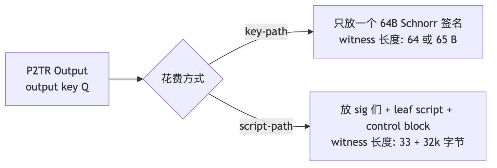
所有参与者合作时用 key-path 花费——链上不暴露任何脚本逻辑；只有协议失败时才走 script-path。BTC 的复杂多签/DLC/Lightning channel close 大部分情况下与普通转账无异。
Taproot 内的脚本子语言，去掉了一些无用 opcode，加了 OP_CHECKSIGADD（多签更高效），允许将来通过软分叉扩展。
Q1：Taproot 的 key-path 与 script-path 在链上"长得一样"——这是不是一种隐私？
Q2：BIP-340 tagged hash 防御了什么类型的攻击？
场景钩子：2023 年 1 月，工程师 Casey Rodarmor 公布 Ordinals 协议——给每一聪 BTC 编号，把任意字节塞进 Taproot witness。Bitcoin Core 老炮们当场炸锅：Luke Dashjr 公开骂"这是攻击 Bitcoin"、要求矿工过滤；Adam Back 阴阳怪气；Pieter Wuille 罕见沉默。但市场不听老炮的：3 个月内 inscription 数量爆到千万级，BRC-20 meme 币把链费打到 100 sat/vB，矿工们一边骂一边收 fee。Casey 后来又出了 Runes 试图把 BRC-20 的状态膨胀压回去。这是 Bitcoin 历史上最大的文化分裂：极简内核不愿意动，但社区把"链上数据存证"硬塞进了 witness——你怎么看待这件事，决定你站哪一边。
用 Taproot 的 script-path 把任意字节封装到 witness（envelope = OP_FALSE OP_IF "ord" OP_PUSH content_type OP_PUSH 0 OP_PUSH content_bytes OP_ENDIF，永不执行但永久存链）+ "序号 satoshi"给每一聪 BTC 永久编号（0..~2.1 quadrillion，FIFO 流转）。
三代 Bitcoin 资产：Ordinals (NFT)（2023-01，单聪 inscription 任意字节 → NFT/文档/艺术）→ BRC-20（2023-03，文本 inscription JSON deploy/mint/transfer → meme 币）→ Runes（2024-04 halving 块激活，OP_RETURN 协议每输出 80 字节，Casey Rodarmor 对 BRC-20 状态膨胀的官方答卷，状态由协议索引器维护更省 indexer）。
2026-04 数据：累计 inscription 65M+；2026-03 Ordinals 销售 ~$47M；累计网络费（含 inscription/Runes）$458M+；BRC-20 → Runes 迁移仍在进行，BRC-20 市值显著萎缩。
Q1：Inscription 把"任意数据"塞进 witness——这与 OP_RETURN 的"协议级 80 字节限制"在状态膨胀上有何不同？
Q2：Runes vs BRC-20 vs cNFT vs ZK Compression——它们都是"省 storage"的不同思路，谁更可持续？
场景钩子：2015 年 Joseph Poon 与 Thaddeus Dryja 在白皮书里写下"Bitcoin 的可扩展性不应该靠加块大小，而靠把支付推到链下"——4 年后 Lightning 主网上线。今天 Block（Jack Dorsey 的 Cash App）、Strike、Binance 出入金、阿根廷的全国支付都跑在 Lightning 上。HTLC 多跳路由的数学非常优雅：要么所有跳成功，要么全不动；中间节点挣 0.001% 路由费、不承担本金风险。但 Lightning 也在悄悄变质——节点数从 2022 年高峰 20,700 跌到 14,940 然后回升至 17,000，总容量却在持续上升：钱在向少数机构节点集中。这是去中心化退步还是金融成熟标志？读完这一节自己判断。
Lightning 是基于 Bitcoin 的链下支付通道网络：双方在主链开通道（2-of-2 multisig commit）→ 链下无限次结算（HTLC 配 revoke old state）→ close 通道把最终状态写回链上。Taproot Assets 在 LN 上发资产（与 §35 RGB 客户端验证不同）。
HTLC 多跳路由：Carol 生成秘密 $r$ 发 $H=\text{SHA256}(r)$ → Alice 在 A→B 锁定，B 出示 $r$ 才能拿 → Bob 在 B→C 锁定 → Carol 用 $r$ 拿钱 → 反向解锁。原子性：要么全跳成功要么全不动，中间节点不赔。
四大实现：LND（Lightning Labs / Go，主流路由）/ CLN（Blockstream / C，模块化）/ Eclair（ACINQ / Scala，Phoenix 钱包后端）/ LDK（Spiral / Block / Rust，嵌入式 SDK，Cash App / Strike 用）。
2026-04 数据：公开节点 ~17,000（高峰 20,700 → 2022 后 14,940 → 机构入场再升）；通道数 ~40,000；总容量 ~5,000 BTC（≈ $490M，2025-12 冲到 5,637 BTC）。CEX 大幅 Lightning 化；节点数下降但容量上升——通道集中化（机构节点）成为现实。
Q1：Lightning 节点数下降但容量上升——这是去中心化退步还是金融成熟标志？
Q2：HTLC 在中间节点崩溃时如何保证原子？timeout 路径是否有"卡住"风险？
场景钩子：2023 年 10 月，独立研究者 Robin Linus 在密码学论坛贴出 BitVM 白皮书：Bitcoin 主链不需要图灵完备——只需要让矿工裁决谁说谎。 他用 Lamport 签名 + 二分挑战，把任意计算编码成"链下执行 + 链上仲裁"，实质上把 Bitcoin 变成了乐观 rollup 的 settlement 层。1 年后 BitVM 2 把安全假设降到 1-of-n existential honesty——只要 n 个节点里有 1 个诚实，桥就安全。这是自 Lightning 以来 Bitcoin 表达力最大的一次跃进，完全不需要软分叉。Citrea 在 2026-01-27 用 BitVM2 桥上线主网，第一个真正 trust-minimized 的 BTC L2。
BTC 矿工不跑复杂程序但愿意按标准脚本仲裁。BitVM 2：操作员链下执行并承诺结果，有人挑战时用 3-4 笔链上交易完成仲裁。
演进：BitVM v1（Robin Linus，2023，两方协议、最多 70 笔挑战）→ BitVM 2（2024-2025，n-of-n 多方、permissionless challenger、3-4 笔完成挑战，安全假设从 honest majority 降到 1-of-n existential honesty）→ BitVM 3 路线（2026+，garbled circuits 进一步压缩）。
Bridge 信任假设：完全联邦多签（Liquid / RSK / wBTC，多数诚实）→ BitVM 2 桥（Citrea Clementine / Bob / Goat Network，任意一个节点诚实即可）→ 真正去信任仅 BTC 共识（目前没有，BitVM 最接近）。
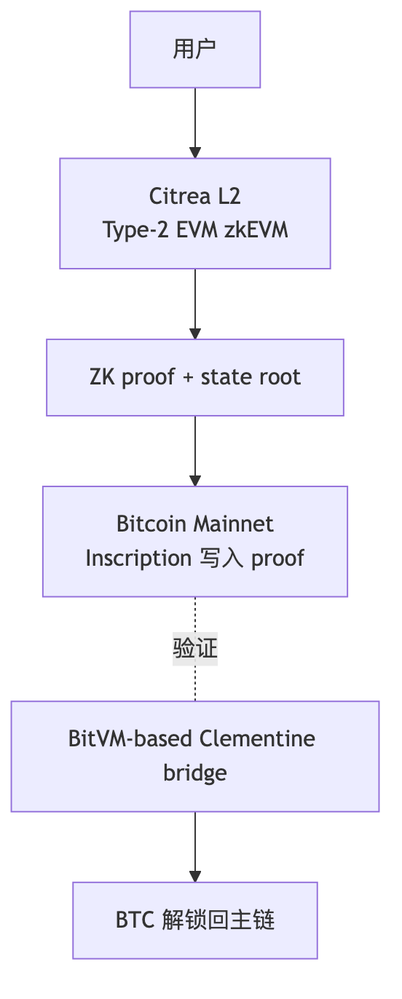
Q1：BitVM 2 的"existential honesty (1-of-n)"安全假设——这是一个什么样的进步？
Q2：Citrea 用 inscription 写 ZK proof 数据——为什么不用 OP_RETURN？
场景钩子：2017 年 Muneeb Ali 与 Ryan Shea 在普林斯顿做 Blockstack（后来的 Stacks），是少数 SEC 批准过 Reg A+ 公开发行的区块链项目。他们的赌注：BTC 不能升级，但可以做一条独立 PoS 链定期把状态摘要写回 BTC——这样 Stacks 上的合约能"借用 BTC 的 finality"。2024 Nakamoto 升级把出块时间从 10 分钟砍到 5 秒，2024-12 sBTC 主网上线（1:1 BTC 锚定，14+ 联邦签名者）。这条路比 Citrea 老 5 年，比 Babylon 早 3 年——Stacks 是 BTC 生态最早跑通"借安全"的链。
Stacks 有独立共识（PoX，leader 选举消耗 BTC），定期把账本摘要写回 BTC 主链；sBTC 1:1 锚定 BTC。
核心：PoX（矿工发 BTC 给 STX 持有者换出块权）+ Clarity（不图灵完备、可静态分析、显式声明读写）+ Nakamoto 升级（2024 激活，出块 ~10min → ~5s，引入 BTC finality 6 块确认不可逆）+ sBTC（2024-12-17 主网，14+ 联邦签名者，1:1 BTC 锚定，初始 cap 1000 BTC，2025-Q1 启用 withdrawal，2026 Satoshi Upgrades 去中心化）。
Q：sBTC 的联邦签名者集合（14+）相比 BitVM 2 桥的"1-of-n existential honesty"安全性如何对比？Stacks PoX"消耗 BTC"与 PoW/PoS 在经济模型上差异何在？
场景钩子：David Tse 是斯坦福的信息论教授，2022 年他读完 EigenLayer 白皮书后想：ETH 能给 AVS 借安全，那 BTC 这块沉睡的 1.5 万亿美元怎么办？他与团队设计了 EOTS（Extractable One-Time Signature）——如果 staker 在 PoS 链上同高度签了双花，他的 BTC 私钥会从签名里被任何人提取出来，被罚没的 BTC 直接销毁。这是把 BTC 自托管 staking 变成可能的数学魔法。Phase-1 主网（2024-08）累计锁了 57,000+ BTC（~40 亿美元），是 BTC 老炮们罕见的"愿意借出 BTC"行为。Babylon 与 EigenLayer 是同代人但走完全不同的数学路径。
EOTS（Extractable One-Time Signature）：staker 在 PoS 链上同高度签双花时，签名能被任何人提取出私钥，从而花掉抵押的 BTC（罚没销毁）。Phase-1（2024-08 启动）= 自托管 staking script 锁仓，2026-04 累计 57,000+ BTC（~$4B+ TVL）；Phase-2（2025-Q1+ 路线，未上主网）= Babylon Chain 主网作为 BSN 编排层；2026 路线 = multi-staking、EVM DeFi、trustless liquidity。
vs EigenLayer：抵押 BTC（self-custody script）vs ETH/LST（合约托管）；罚没 = EOTS 提取私钥花掉 BTC vs 合约 slash；客户网络 = Cosmos PoS / 各 BSN vs EVM AVS；信任 = 仅 BTC 共识 + EOTS 数学 vs EigenLayer 合约不被 hack；杠杆 = 不能再质押第三方 vs 可叠加 restake。
Q：Babylon 的 EOTS 数学保证 vs EigenLayer 的合约 slashing——哪种在长尾事件下更稳健？BTC 持有者愿不愿意为奖励冒被 slash 风险？
RGB（client-side validation 极致形态）复杂度超出本附录定位 — 详见 RGB 官方 spec。本节只列工程师选型时该认识的 L2 矩阵。
| L2 | 类型 | 状态（2026-04） | 关键点 |
|---|---|---|---|
| Citrea | ZK Rollup + BitVM 桥 | 主网（2026-01） | 第一个真正 trust-minimized BTC L2 |
| Stacks | 独立 PoX 链 + sBTC 锚定 | sBTC 主网已运行 | 见 §33 |
| Babylon | BTC staking 服务 | Phase-1 主网，57k+ BTC TVL | 见 §34 |
| Lightning | 状态通道 | 已 7+ 年 | trust-minimized 支付层 |
| Liquid | Blockstream 联邦侧链（~15 机构） | 2018 主网；2026-Q1 首次后量子（SHRINCS）实测资金转账 | Confidential Transactions；机构 RWA + USDt-Liquid 主场 |
| RGB | Client-side validation + LN | 2025-07 主网；2025-11 BitMask 支持 RGB20，Tether 准备发 BTC-USDT | 链上无 RGB 状态，理论 40M tx/s |
| Rootstock (RSK) | 联邦合并挖矿 EVM | 已 7 年 | rBTC 联邦多签 |
| BOB / Botanix / Merlin / B² / BEVM | 各种联邦 EVM | 主网 / 测试网 | EVM 兼容；Merlin/B²/BEVM 中国生态主导 |
| Goat Network | BitVM2 ZK | 测试网 | BitVM2 白皮书实现之一 |
Q：BTC L2 数量爆炸但只有少数真实 TVL，筛选标准应该是什么？为什么后量子签名先在 Liquid 试而非 BTC 主网？
完整代码见 code/bitcoin/p2tr/。核心步骤（key-path）：
import * as bitcoin from "bitcoinjs-lib"; // 7.0.1
import * as ecc from "@bitcoinerlab/secp256k1";
import { ECPairFactory } from "ecpair";
bitcoin.initEccLib(ecc);
const ECPair = ECPairFactory(ecc);
const network = bitcoin.networks.regtest;
// 1) 一对 keypair
const kp = ECPair.makeRandom({ network });
const xOnlyPubkey = Buffer.from(kp.publicKey.subarray(1, 33)); // 去掉 0x02/0x03 → 32B x-only
// 2) P2TR 地址（key-path only）
const { address, output } = bitcoin.payments.p2tr({
internalPubkey: xOnlyPubkey,
network,
});
// 3) 构造 PSBT
const psbt = new bitcoin.Psbt({ network });
psbt.addInput({
hash: prevTxid,
index: 0,
witnessUtxo: { script: output!, value: 100_000 },
tapInternalKey: xOnlyPubkey, // P2TR PSBT 必填
});
psbt.addOutput({ address: recipient, value: 90_000 });
// 4) 用 tweaked signer 签名
const tweakedSigner = kp.tweak(
bitcoin.crypto.taggedHash("TapTweak", xOnlyPubkey), // BIP-341 tweak
);
psbt.signInput(0, tweakedSigner);
psbt.finalizeAllInputs();
const tx = psbt.extractTransaction();
console.log("vsize:", tx.virtualSize(), "weight:", tx.weight());
BIP-341 tweak 公式：$Q = P + H_{\text{TapTweak}}(P | \text{merkle_root}) \cdot G$。无脚本树时 merkle_root = ""，钱包必须用 tweaked private key 签名，否则验签失败。
完整的 script-path 与解码示例见 code/bitcoin/p2tr/build_scriptpath.ts 和 decode_taproot_tx.ts。
完整代码见 code/bitcoin/ldk-node-demo/。脚本演示：起两个节点 A/B，互联，开 100k sats 通道，A → B 发 1000 sats。
import { Builder, NetAddress } from "ldk-node";
const alice = new Builder()
.setNetwork("regtest")
.setStorageDirPath("./data/alice")
.setEsploraServer("http://127.0.0.1:30000")
.setListeningAddresses([NetAddress.fromString("127.0.0.1:9735")])
.build();
await alice.start();
alice.connect(bobNodeId, bobAddr, true);
alice.openChannel(bobNodeId, bobAddr, 100_000n, 0n, undefined);
// Bob 出 invoice，Alice 支付
const invoice = bob.bolt11Payment().receive(1000_000n, "demo", 3600);
alice.bolt11Payment().send(invoice, undefined);
Bitcoin AI 工具成熟度几乎为零，所有非 EVM 中最弱。原因：Script/Taproot/PSBT 语料量极小；开发以协议级（BIP）为主，LLM 难理解；L2 碎片化无统一抽象；Bitcoin Core 维护者对 AI 写共识代码极度保守。
实测： - 写 PSBT 构造代码：容易出错，特别是 SegWit / Taproot 的 sighash 算法 - 写 Lightning 应用：能写 invoice/支付的 boilerplate，但通道管理、watchtower 配置基本不会 - 写 BIP 兼容代码：经常生成"看起来对但不符合任何 BIP"的代码
真正"AI 友好的 BTC 工具"目前几乎没有——这是创业机会。
推荐顺序：Mastering Bitcoin (3e) → Programming Bitcoin → BIP 精读 (32/39/44/141/340/341/342) → Bitcoin Optech 周报 → 实战 (bitcoinjs-lib / btcd / rust-bitcoin) → L2 选型。完整资源见第 52 章。
Q1：为什么 Bitcoin 主链不实现智能合约？这种保守是设计选择还是技术限制？
Q2：BIP-340 tagged hash 的"两次 SHA256(tag)"为什么这么写？防御了什么攻击？
Q3：Citrea 用 inscription 写 ZK proof 数据，这与 Ethereum L2 用 blob (EIP-4844) 在 DA 假设上有何不同？
参考答案见练习目录 exercises/bitcoin-taproot-decode/ANSWERS.md。
下一段"其他主流链"按家族特征而非逐链 hello-world 组织——目标是让你 30 分钟看懂任意新链。
前四大家族（Solana / Cosmos / Move / Bitcoin）覆盖了大半，但不是全部。下面 12 条链按执行模型 + 信任/治理形态归族，每族抓住一条共性主线，剩下的篇幅只讲"这条链相对家族的差异点"——不再每条链复述共识、语言、TPS。
| 家族 | 共性主线 | 章节 | 心智迁移点 |
|---|---|---|---|
| Actor 异步消息 | 合约是独立 actor，所有调用是消息 | TON (§38) | EVM 同步 call → 异步 send；CosmWasm sub-message 的极致版 |
| 链抽象 / Intent | 用本链账户控制其他链 | NEAR (§39) | EVM 钱包"只能签本链" → 一对私钥多链通用 |
| 通用计算 VM | 用真实 ISA 取代特化 VM | Polkadot/JAM (§40) | EVM/SVM/MoveVM 是特化 VM → JAM 押 RISC-V 通用 ISA |
| eUTXO + 学院派 | UTXO + datum，链下构造 + 链上验证 | Cardano (§41) | EVM"合约写状态" → Cardano"客户端给状态、链上只验" |
| Pure PoS + VRF | 抽签委员会，单层确定 finality | Algorand (§42) | Tower BFT/CometBFT 全员投 → VRF 抽 ~1000 人投 |
| 链上自升级 | 治理通过即热替换协议 | Tezos (§43) | Ethereum 硬分叉停机 → 链协议像系统更新 |
| 链上全栈托管 | 前端、后端、AI 全跑链上 | Internet Computer (§44) | dApp 前端常托管在 IPFS/中心化 → ICP 浏览器直连 canister |
| 存储经济 | 拼硬盘而非算力，存储即资产 | Filecoin (§45) | DA 是 EVM L2 的"成本项" → Filecoin 把存储做成主业 |
| EVM 但非主流合规 | 兼容 EVM，承载真实美元流量 | Tron (§46) | 工程师不爱、用户离不开的市场现实 |
| 企业治理 + Hashgraph | 委员会准入、专利共识、合规优先 | Hedera (§47) | Solana 全开放 → Hedera 全许可 |
| 并行 EVM | 重写 EVM 客户端 + 乐观/OCC 并行 | Sei v2 / Berachain V2 / Monad / MegaETH (§48-49) | 串行 EVM → 并行 EVM；这是 2024-2026 最大主题 |
| 自建 perp L1 | 内存订单簿 + 共享 BFT 共识 | Hyperliquid (§49) | DEX 部署在通用链 → DEX 自起一条专用链 |
用法：以下每条链只展开"心智迁移点"和工程后果，共识/语言细节如属家族共性则不再重复。完整对比矩阵见 §50。
场景钩子：2018 年 Telegram 创始人 Pavel Durov 兄弟想给 9 亿用户做一条链，集结俄系顶级密码学家写出 TON（Telegram Open Network）。SEC 一脚踩死后，团队解散；TON Foundation 把代码开源接力跑。今天 Telegram Mini Apps 月活 5 亿，STON.fi DEX 累计 swap volume 58 亿美元——一个没有美国市场的 Web3 巨人。技术上 TON 是怪胎：所有合约调用都是异步消息（actor 模型推到尽头）、Workchain 自动分片、FunC 写起来像 LISP——但在 Telegram 内嵌 WebView 的分发渠道下，UX 漏斗短到极致：开聊天 → 点 Mini App → 一键登录 → 交易。
心智迁移点：CosmWasm sub-message 是"主流程同步 + reply 异步"，TON 把整个调用模型推到尽头——所有调用都是异步消息，没有同步 call。这堵死了重入攻击整类，代价是不能"调一个函数等返回值"。
| 维度 | EVM call | CosmWasm sub-message | TON actor message |
|---|---|---|---|
| 同步调用 | 默认 | 主流程内同步 | 完全没有 |
| 重入风险 | 有 | 无（reply 单独） | 无 |
| 业务编排 | 一笔事务一棵 call tree | sub-message + reply 二阶段 | 状态机式 + bounce |
工程后果：写 Counter 合约简单（receive("inc") 一行），写 DEX 撮合复杂——必须用 bounce / 多 actor / 状态机思考；STON.fi、DeDust 核心仍用 FunC 而非高层 Tact，因为高层抽象在异步状态机上还不够稳。
2026-02 Catchain 2.0 主网验证人激活后块时间 400 ms、finality 1-2 s；分片由 Workchain → Shardchain 自动切，理论百万 TPS（实际未跑满）。共识细节见模块 02。
// FunC 风格 (汇编近似的低级)
() recv_internal(int my_balance, int msg_value, cell in_msg_full, slice in_msg_body) impure {
var cs = in_msg_full.begin_parse();
var flags = cs~load_uint(4);
if (flags & 1) { return (); } ;; bounce
var s_addr = cs~load_msg_addr();
;; ... 极底层，几乎汇编手感
}
// Tact 风格 (类 TypeScript / Solidity)
contract Counter {
val: Int;
init() { self.val = 0; }
receive("inc") { self.val = self.val + 1; }
get fun value(): Int { return self.val; }
}
| 选 FunC 当 | 选 Tact 当 |
|---|---|
| 字节级优化重要（gas 极敏感的合约） | 业务逻辑优先 |
| 团队有 C/汇编背景 | Solidity 背景，想快速上手 |
| 原生协议合约（Jetton、NFT 标准） | DeFi 业务合约 |
2026 现实：Tact 部分高级特性（继承、泛型）尚未稳定；STON.fi、DeDust 核心仍用 FunC。
Telegram Mini App 是网页应用（HTML/JS/CSS），通过 bot 启动，结合 TON Connect 实现"打开聊天 → 一键登录 → 交易"。
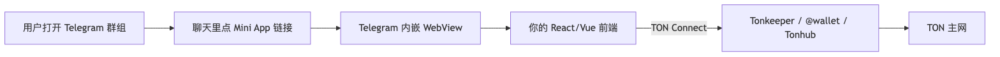
开发栈 = React + TON Connect SDK + bot 后端，与 Web 无本质区别，但用户漏斗极短。
Cocoon（2025-12 主网，Confidential Compute Open Network）把 TEE 作为 Service 暴露给 TON 合约，AI 推理"加密输入、加密输出"——服务于 Telegram 5 亿用户的端到端加密 AI 场景。
| 数据 | 值 |
|---|---|
| 块时间 | ~400 ms（Catchain 2.0） |
| Finality | 1-2 s |
| 用户 | Mini Apps 月活 500M+ |
| DeFi TVL | STON.fi + DeDust > $450M |
| STON.fi 累计 swap volume | $5.8B+, 4.7M+ 钱包 |
| 主网 Catchain 2.0 验证人激活 | 2026-02 |
TON 的真正杀手锏不是 actor 模型，而是 5 亿月活的 Telegram 用户原地变成 web3 用户——Mini App 不需要装钱包、不需要切链、不需要复制助记词。
典型流程：
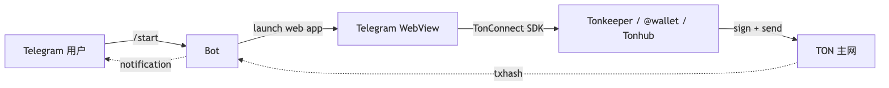
window.Telegram.WebApp 关键 API：initData（服务端验签源串）/ initDataUnsafe（客户端解析对象，不可信仅 UI 用）/ themeParams（自适应深浅主题）/ MainButton.show()（系统级底部主按钮）/ HapticFeedback（振动）/ openLink() / openTelegramLink()（跳外链）。
initData 验签（必须做）：WebView 客户端 user 字段可伪造，服务端必须用 bot token 做 HMAC-SHA256 校验。流程：取 hash 字段 → 剩余字段排序拼 dataCheckString → secret = HMAC-SHA256("WebAppData", botToken) → computed = HMAC-SHA256(secret, dataCheckString) 须等于 hash → 校验 auth_date ≤ 24h 防重放。
生产事故惯例：很多 Mini App 直接信任
initDataUnsafe.user.id当用户 ID + 签发 JWT，导致遍历 user_id 偷资产；正确做法只信服务端verifyInitData后的解析结果。
TonConnect SDK 工作流（类 EVM wagmi 但走 BoC / cell 签名）：new TonConnectUI({ manifestUrl }) → tc.openModal() 弹钱包列表 → tc.sendTransaction({ validUntil, messages: [{ address, amount: "10000000" (nanoTON), payload: "te6cck..." (base64 cell) }] }) → 拿到 BoC。
Stars 支付（Telegram 自家虚拟货币）：
Telegram.WebApp.openInvoice(url) 触发系统级支付；2024 是 TON 的"Tap-to-Earn 元年"，三个标志性产品集体把 web3 用户基数推到亿级，同时给工程师留下了一堆教科书级教训。
| 项目 | 时间线 | 用户峰值 | TGE 后表现 | 留存教训 |
|---|---|---|---|---|
| Notcoin | 2024-01 启动 / 2024-05 TGE | Notcoin 约 3500 万玩家（官方 TGE 时 35M；5000 万含 bot/Sybil） | TGE 估值 ~$2B；空投惠及 600 万钱包；后续 -70% | 拉取期短（4 个月）+ 空投预期清晰 = 用户体感正面 |
| Hamster Kombat | 2024-Q2 / 2024-09 TGE | 3 亿（Q3 2024 峰值） | TGE 后 崩盘 90%+，用户流失 80% | 拉取期太长（6 个月）+ 空投打分公式临时改 = 信任崩塌 |
| Catizen | 2024-Q3 / 2024-Q4 TGE | 5000 万 | TGE 表现中等；2025 转型多游戏发行平台存活 | 游戏化机制本身有留存（小游戏 + NFT 猫）；TGE 后转型救命 |
工程教训（不重复别人的坑）：
Telegram bot 是 Mini App 之外的另一条用户入口，三类 bot 在工程上设计差异巨大：
| 类型 | 代表 | 钱包模型 | 关键风险 |
|---|---|---|---|
| 托管钱包 bot | @wallet（Telegram 官方），TON 链 | Telegram 自家托管，KYC 可选 | 平台 freeze；地区合规变化 |
| Tip bot / 社区打赏 | TipBot、TonTip | 共享 hot wallet 或子地址 | bot 主私钥泄漏 = 全部用户余额 |
| Trading bot | Maestro、BonkBot、Banana Gun（Solana 主战场，但 Telegram 是入口） | 服务端代签，私钥服务器持有 | bot 跑路 / 服务器被黑 / 滑点欺诈 |
Hot wallet 架构（trading bot / tip bot 通用）：多用户 → bot 服务端按 user_id HKDF derive 子地址私钥；主私钥仅存 KMS / HSM。
典型事故 1（2023-2024 BonkBot + 多个无名 tip bot）：主私钥放普通 EC2 → 被入侵 → 几千用户 SOL 一夜清零 + 团队跑路。教训：主私钥进 KMS / HSM；线上服务读不到全私钥（只调签名 API）。
典型事故 2：Trading bot 在 Solana 上做"用户 deposit → 帮买 meme"——meme migration 阶段被 sniper 抢跑（bot 自己抢用户的 tx）。教训：bot 私钥与"路由器策略账户"必须严格分开，Squads V4 多签 + program-derived address (PDA) 隔离。
抗 Phishing 三件套：
https://t.me/yourbot?start=xxx 必须服务端校验 token，避免恶意 link 直进 Mini App；Q1：TON 的 actor 模型异步消息相比 EVM 同步 call 有何优劣？
Q2：
initData服务端验签的细节里，为什么必须用HMAC-SHA256("WebAppData", botToken)当 secret，而不是直接用 botToken？Q3：Hamster Kombat TGE 崩盘的根本原因是"打分公式临时改"还是"拉取期太长"？两者结合时谁是因谁是果？
场景钩子：Illia Polosukhin 在 Google 研究院共同写出 Transformer 论文（"Attention Is All You Need"）后，2018 年与 Alex Skidanov 创立 NEAR——一个用机器学习背景做的链。NEAR 走过很多弯路：动态分片（Nightshade）真的跑通了，但 2022-2023 拿不到主流 mindshare。2024 年团队做了个大胆的转向：chain abstraction——用一个 MPC 网络让
alice.near一对私钥派生并代签 BTC/ETH/SOL 25+ 条链的交易，不需要桥、不需要 wrap，钱直接在原链上动。配合 Intents（用户表达"想干啥"，Solver 网络竞拍最优路径），NEAR 把"跨链 UX"做成了协议级原语，反过来吃掉 LayerZero/Wormhole 的午餐。
心智迁移点：EVM/Solana 的私钥只能签本链；NEAR 用一个 MPC 网络让 alice.near 一对密钥派生并代签 BTC/ETH/SOL/Cosmos 25+ 条链的交易——不需要桥、不需要 wrap，钱直接在原链上动。
共识 Doomslug（PoS BFT）+ Nightshade 动态分片 + WASM 执行细节略；NEAR 工程师真正用得上的两件事是 Chain Signatures 和 accessKey + Intents。
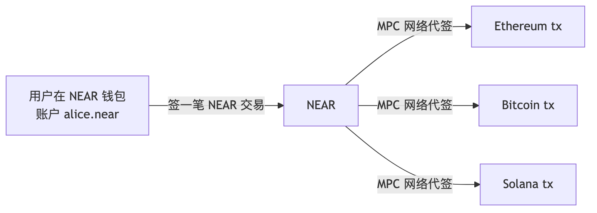
用 NEAR 上的 MPC 签名网络（chain signatures），用户可用 NEAR 账户控制 ETH/BTC/SOL 资产——无需桥、无需 wrap，直接用 NEAR 私钥派生其他链签名。
用户在 NEAR 钱包表达意图（"把 100 USDC 换 BTC 发到 X 地址"）→ 钱包广播到 Solver 网络拍卖 → 多个 Solver 报价 → 选最优 → Solver 在多链组合 swap + bridge + send → 完成。
vs 传统跨链：用户手动 swap → bridge → swap → send；路径写死；信任桥的多签；失败资产卡在桥。NEAR Intents：一句话；Solver 竞拍最优；信任 = NEAR Chain Signatures + Solver bond；失败 Solver 罚没。
vs EVM 账户抽象（ERC-4337）：4337（2023）仅同链 paymaster；NEAR accessKey（链原生即有，仅 NEAR）；Chain Signatures（2024，跨链原生，限速 / spending limits / session keys 协议级，paymaster 由 Solver 隐含）。
| 数据 | 值 |
|---|---|
| Chain Signatures 支持的链 | 25+（含 BTC、ETH、SOL、Ripple、Cosmos） |
| MPC 节点扩张 | 2026 路线持续 |
| TEE 集成 | IronClaw（隐私 AI agent） |
| Intents 钱包集成 | Meteor、HOT、Intear、Near Mobile、Nightly |
| Tachyon Relayer | 多链中继器，赢得 Chain Abstracted Relayer RFP |
Q1：Chain Signatures vs LayerZero / Wormhole / CCIP——它们都解决"跨链"，但出发点完全不同？
Q2：Intents 抽象掉"路径"——这与 Cowswap、UniswapX、1inch Fusion 在思路上有何相似？
本节定位：这 6 条链各有独到技术，但 2026-04 的 DAU/TVL/招聘量都不及前文五大族 + Tron/TON/NEAR/并行 EVM 阵营——选型时知道它们存在、知道它们的"心智迁移点"即可。需深入再翻独立 doc。
| 链 | 心智迁移点（vs EVM） | 2026-04 状态 | 选型时机 |
|---|---|---|---|
| Polkadot 2.0 / JAM | EVM/SVM/MoveVM 是特化 VM；JAM 押 RISC-V PVM 通用 ISA，LLVM 工具链开箱用 | Agile Coretime（取消 parachain 拍卖）已上；JAM testnet 2026-01 启动，主网 OpenGov 投票中；Gray Paper v0.8 临近 | 押注通用 VM 假说、想用 C++/Rust/Go/Zig 直接写链上代码 |
| Cardano | EVM "合约写状态"；eUTXO 反过来 —— 客户端先把新状态算好作 datum 提交，validator 只回答合不合法 | Plomin Hard Fork（2025-01）开启 Voltaire 治理；Plutus V3 已激活；Hydra 多方头通道生产用；Ouroboros Leios 2026-06 testnet（目标 200-1000 TPS） | 学院派形式化方法 / Hydra 多方状态通道 / DReps 治理研究 |
| Algorand | 全员投票太慢 → VRF 每轮抽 ~1000 人临时委员会，抗 grinding / 抗分叉 | AVM v10 主网；Dynamic Round Times（3.4s → 2.8s）；2026-04-05 SEC + CFTC 把 ALGO 归 commodity（少数合规明确链） | 需 VRF 委员会共识 / 合规优先 / 学 Silvio Micali 思路 |
| Tezos / Etherlink | Ethereum 升级要硬分叉停机；Tezos 把协议本身写成链上对象，治理提案通过即热替换（系统更新而非换链） | 每 ~3 月一周期升级（Athens → Rio）；Etherlink（Smart Rollup EVM L2）2024 主网；NFT 黄金期靠 Hic Et Nunc / fxhash 留下生成艺术圣地 | 想做链上自升级 / 生成艺术 NFT / Tezos 原生 EVM L2 |
| Internet Computer (ICP) | dApp = 合约 + 链下前端；ICP 把 HTML/CSS/JS/数据库/AI 推理全做成链上 canister，浏览器 HTTPS 直连，dApp 替用户付费 (reverse gas) | Chain Key Cryptography 让 canister 直接持 BTC/ETH 私钥（threshold ECDSA，subnet ⅔ 共管，无桥无 wrap）；2026 押 GPU subnet 跑链上 LLM；Mission 70 通胀 9.72% → 2.92% | 端到端链上托管（前端 + DB + AI） / Chain Key 直控他链资产 |
| Filecoin / FVM | EVM L2 把存储当"成本项"；Filecoin 把存储做成可编程资产（PoRep + PoSt 证明，FVM 让 Solidity 合约管"存什么、谁付、怎样收"） | PoRep / PoSt / PDP 三证；FVM EVM 兼容；2026 主用例 = AI 数据仓库 + 企业归档；与 Walrus（Sui 协调存储）/ Arweave（一次付费永存）/ EigenDA（restake DA）/ Celestia（Reed-Solomon DA）分赛道 | 长期数据市场 / 数据 DAO / AI 模型权重托管 |
关键对比：
思考题（40-45 合并）：
Q1：JAM 押 RISC-V PVM、Cardano 押 eUTXO + Plutus、ICP 押全栈链上 canister——三条赌注都偏学院派，市场反馈各自如何？
Q2：ICP Chain Key Bitcoin（threshold ECDSA）与 BitVM 桥相比，信任假设各差在哪？
场景钩子：Tron 的技术故事极其无聊：DPoS 27 个 Super Representative + EVM 兼容（TVM ≈ EVM）+ 抄袭 BitTorrent 团队。Justin Sun 个人风评糟糕，被 SEC 起诉，主流工程师 group 里提 Tron = 自动降智嫌疑。但你打开任何东南亚 OTC 商户的钱包、菲律宾外劳的汇款 app、阿根廷牛肉商人的结算——USDT-TRC20 流通量已超过 USDT-ERC20。$0.5 一笔的转账成本、几乎零拥堵、CEX 全支持。这是教科书级的"工程师不爱、用户离不开"案例。做支付/汇款/聚合器必须支持，做合规 DeFi 必须避开——成年人的世界，市场和合规两套账。
心智迁移点：技术上是 EVM 兼容（TVM ≈ EVM）+ DPoS 27 SR——没什么值得学的。但USDT-TRC20 流通量已超过 USDT-ERC20，东南亚/拉美/非洲/CIS 跨境结算实际跑在 Tron 上。工程师不爱、用户离不开——做支付/汇款/聚合器必须支持，做合规 DeFi 必须避开。
| 维度 | 值 |
|---|---|
| 共识 | DPoS（27 个 Super Representatives） |
| EVM 兼容 | 是（TVM ≈ EVM） |
| USDT-TRC20 | 流通量超过 USDT-ERC20（2026-04） |
| 单笔转账成本 | $0.1-3 视 energy 状态（比 Ethereum 低 100 倍，比 BSC 略高） |
| 主要市场 | 东南亚、拉美、非洲、CIS |
| 主要使用场景 | 跨境结算、灰色 / 黑色市场、CEX 出入金 |
| 场景 | 决策 |
|---|---|
| 你做的是合规友好 DeFi / RWA | 不要 Tron |
| 你做的是面向新兴市场的支付 / 汇款 | 必须支持 Tron |
| 你做的是跨链聚合器 | 必须支持 Tron（USDT 流量在那） |
| 你做安全审计或链上分析 | 学一下，了解风险 |
| 你做技术革新 | 跳过 |
Tron 的 gas 模型不像 EVM 那样"一笔费用一把梭"，而是两套配额 + 一套燃烧——这是为什么菲律宾外劳给老家汇 USDT 时手续费几乎为零的真实机制。
三种资源：
| 资源 | 用途 | 每日免费额度 | 不够怎么办 |
|---|---|---|---|
| Bandwidth Points | 每笔交易的字节数（≈ tx size × 1） | 每账户 1500 points/天（约够 5 笔普通转账） | 燃 TRX（每 byte ≈ 0.001 TRX）或质押 TRX 获取 |
| Energy | 合约执行的"算力"（USDT 转账 ≈ 64,285 energy） | 0（必须自己搞） | 燃 TRX（每 energy ≈ 0.00021 TRX，约 $0.1-3 视 energy 状态）或质押/租赁；未租 energy 时燃 TRX 约 $1.5-3；租 energy 后约 $0.1-0.3；带宽免费时段散户感官"几乎零成本" |
| TRX 燃烧 | 兜底：上面都没有就直接烧 TRX 抵 | — | — |
Stake 2.0（2023 升级，2026 仍在用）：把 TRX 冻结在合约里换出 Energy / Bandwidth，资源以"份额"形式发放、可委托给其他地址、解冻 14 天可领回。比 Stake 1.0 灵活得多，也是 energy 租赁市场的底层基础。
Energy 租赁市场（2026-04 仍是 Tron 生态最活跃的子赛道之一）：
dApp 后端实践（典型流程）：
triggerConstantContract（dry-run）估算交易要消耗的 energy；getAccountResource(address) 拿用户当前 EnergyLimit / EnergyUsed / freeNetUsed；rentResource(address, amount, duration)）；最小流程（Python tronpy）：1) client.get_account_resource(addr) 查 EnergyLimit/Used、freeNetLimit/Used；2) USDT-TRC20 transfer 经验 ~65k energy；3) 不够则 client.trx.freeze_balance_v2(addr, 100_000_000, 'ENERGY') Stake 2.0 自己换，或调 TronEnergy.market / FeeFreeing SDK 租；4) contract.functions.transfer(to, amount).with_owner(addr).fee_limit(30_000_000) 发实际 USDT 转账。
工程师陷阱：
fee_limit是 TRX 燃烧上限（防 energy 不够 + 没租到时无限烧 TRX）；新手忘加导致账户被 buggy 合约烧空案例不少。
Tron 链上 DeFi 长期被嘲"全是 SunIO 自家系"，但东南亚 / 大陆华人圈 USDT 跑量靠这套撑底层。SunSwap V3（Uniswap V3 fork，TVL ≈ $200M，USDT-TRX/USDD-USDT 主对）/ JustLend DAO（Compound fork + DPoS 模型，TVL ≈ $5B 多为 TRX 借贷池给 SR 投票套利）/ USDD（DAI/UST 混合体，TRX 超额抵押 + PSM，2022 短暂脱锚后稳住，不被主流 CEX 当一类资产）/ stUSDT（JustLend 发行 RWA 货币基金对接美债，Tron 最大 RWA，~$2B AUM）。
中文圈"USDT 转账走 Tron"是默认：CEX 提币费 USDT-ERC20 ≈ $5 / TRC20 ≈ $1（租 energy 后近零）；OTC 商户对账软件（Trongrid + 第三方 indexer）成熟；钱包（imToken / TokenPocket / TronLink / OKX）默认推 TRC20；中文教程清一色 Tron 演示。
工程师推论：做面向中文用户的钱包 / 支付 / 工资发放，Tron 必须默认链之一；做合规出海产品反向——美 / 欧 / 日合规要求"客户禁用 Tron"。
与 模块 06 §2.4 的 USDT 跨链流通图交叉引用：USDT 在 Tron 是"事实跨境美元"，但合规边界极其敏感。
主战场地图（2026-04，按交易密度排序）：东南亚（菲/越/印尼/泰/马，外劳汇款 + 跨境贸易 + 灰色赌博出入金）/ 大陆华人圈（OTC + 海外华人，场外换汇 + 海外购物代付）/ 拉美（阿/委/巴/墨，通胀避险 + 外贸单，USDC-Solana 增长快）/ 非洲（尼/肯/加/南非，外汇管制规避 + freelancer，M-Pesa + Bitnob LN 替代）/ CIS/俄罗斯（制裁规避 + 能源贸易）/ 中东（土耳其/伊朗灰色，法币贬值避险）。
合规风险：OFAC/FinCEN 把 USDT-TRC20 长期归 "high-risk corridor"，美/欧 KYC 默认 high-risk；Tether 可远程冻结任意地址（2024-2026 累计冻结 $5B+，不是无许可资产）；SEC 对 Justin Sun + TRX/BTT 诉讼 2023-03 起未和解；大陆 9.24 通知禁 Tron 项目工作 / 持仓 / 技术服务（见附录 X）。
结论：Tron 是工程师必须能读、能转、能聚合但少主动建产品的链——当 USDT 的"运输管道"用，别当"创业平台"用。
Q1：Tron 的合规风险与"事实使用量"——工程师该如何看待这种"非主流但巨大"的市场？
Q2：Energy 租赁市场是 Tron "几乎零费"假象的真实底层；如果监管要求"所有手续费必须由用户原生支付"，这套机制会出什么问题？
Q3：USDT-TRC20 与 USDT-ERC20 都是同一份发行储备的两个"链上分身"，但合规评分截然不同——你的支付产品如果要做"币种兼容、链中立"，会怎么设计？
场景钩子：Leemon Baird 是空军学院密码学教授，2016 年发明 Hashgraph 共识算法（gossip-about-gossip + virtual voting）——并把它申请了专利。这在开源至上的区块链世界里被骂得狗血淋头："专利共识？算什么 Web3？" 但 Leemon 没在意，他把 Hedera 做成企业链：39 家全球企业（IBM、Google、波音、LG、McLaren）实体董事会治理，固定低 gas（$0.0001/tx），carbon-negative。普通工程师可能一辈子用不上 Hedera，但全球 RWA、企业供应链、合规稳定币这块市场，Hedera 是能数得上的几条链之一。2026-03 Agent Lab 上线后，是非 Solana 阵营第一条把 AI Agent 做成顶级产品的链。
心智迁移点：Solana 全开放、Cosmos 治理由 token 持有者投票；Hedera 由 39 家全球企业（IBM、Google、波音、LG、McLaren）组成实体董事会治理，以"企业可信度"换"非完全去中心化"。共识 Hashgraph（gossip-about-gossip + virtual voting）见模块 02 附录 A 横评（Hashgraph 行）；算法是 Hedera 独家专利，这点与所有开源链截然不同。
| 服务 | 缩写 | 说明 |
|---|---|---|
| Hedera Consensus Service | HCS | 给 dApp 提供"按时间顺序的消息流"；Web2 应用最爱用 |
| Hedera Token Service | HTS | 原生 token，无需合约 |
| Hedera Smart Contract Service | HSCS | EVM 兼容合约 |
| Hedera File Service | HFS | 链上小文件 |
第一方平台，浏览器内零代码/代码模式构建 agent，与 HCS/HSCS 深度集成——第一个非 Solana 阵营把 AI Agent 做成顶级产品的链。
主要能力： - 用 LLM function-calling 调度 HTS / HSCS / HCS API - 集成 Stablecoin Studio（合规稳定币发行） - McLaren F1 是首批用 Hedera Agent Lab 做"赛车数据 NFT"的合作方
| 数据 | 值 |
|---|---|
| Agent Lab 上线 | 2026-03-26（浏览器、零代码 + 代码模式建链上 AI agent） |
| 治理委员会 | 39 家全球企业；2026-03 McLaren F1 加入 |
| 2026 路线 | Agent Lab + Stablecoin Studio integration |
| 特色 | Carbon-negative、固定低 gas（$0.0001/tx） |
Q1：Hedera 的企业治理委员会与 Cosmos / Solana 的去中心化路线——哪种更适合 RWA？
2024-2026 最大主题：EVM 字节码兼容 + 并行执行，让 Solidity 生态享受 Solana/Aptos 风格的吞吐。本节速查 Sei / Bera；并行 EVM 主代表 Monad 见 §49.1。
| 链 | 心智 | 关键演进 | 并行机制 |
|---|---|---|---|
| Sei v2 | EVM 网络效应足够大时，自创新栈成本不再划算 | v1 纯 Cosmos（2023） → v2 Cosmos+EVM 双栈（2024，世界首个并行 EVM） → EVM-only（2026-04-06 至 04-08 迁移，抛弃 Cosmos 栈成纯 EVM L1） | OCC + storage versioning（多版本存储 + 冲突检测回滚，思路同 Block-STM） |
| Berachain V2 | PoS + Proof-of-Liquidity：验证人必须引导 LP 流动性才能拿全奖励，区块空间与 DeFi 流动性绑死 | V1 Polaris VM（mempool 跟不上）→ V2 抛弃 Polaris，改 BeaconKit（EVM 客户端无关层，Geth/Reth/Erigon 任意接入） | 共识层并行依赖底层 EVM 客户端实现 |
Berachain 三代币模型：BERA（gas、可转让）+ BGT（治理、不可转让、burn 换 BERA）+ HONEY（原生稳定币）。验证人投 BGT 给 LP 池 → 项目方为被投必须吸引 LP → 形成"BGT 内卷"。
Berachain PoL vs EigenLayer Restaking：前者用 BGT（不可转让）激励链内 LP；后者用 ETH/LST（可转让）给 AVS 借安全。资产形态、激励对象、经济目的全不同。
Q：Sei 离开 Cosmos、Bera V2 抛弃 Polaris——这两个动作对 Cosmos 阵营是不是打击？
场景钩子：Hyperliquid 是 2024-2026 加密圈最反共识的成功故事。两个哈佛 + Caltech 出身的高频交易工程师 Jeff Yan 和 iliensinc，自筹资金、不融 VC、不发 token 公募，硬生生为 perp DEX 做了一条专用 L1。所有验证人内存里维护同一份订单簿，user packet → fill < 1 秒。2024 年底空投彻底改写"VC 通吃"叙事——大批散户拿了几百万美元，公链空投史上最大单。HIP-3（2025-10）让任何人质押 500k HYPE 就能部署 perp 市场，上市权完全 permissionless。这一章把 Hyperliquid、Monad（并行 EVM 第三例）、MegaETH（10ms 块时间）放一起：它们代表 2025-2026 加密"既要又要"——既要 EVM 兼容、又要 Solana 性能、还要应用专属链的极致定制。
承接 §48 主线。Monad（2025-11 主网）相对 Sei/Berachain 的差异化是自研存储 + 异步执行：
| 组件 | Monad 做法 |
|---|---|
| 共识 | MonadBFT（HotStuff 派生 + pipeline） |
| 并行 | 乐观并行（类似 Aptos Block-STM 应用到 EVM） |
| 存储 | MonadDB（自研 LSM，针对状态访问优化） |
| 执行 | 异步——共识层只决定顺序，执行延后 |
主网半年 TVL ~400M、单日 1.2B+ tx；2026-03 Osaka 升级（CLZ opcode + reserve balance precompile）；空投奖励 ~225k 链上验证用户（含 Hyperliquid / Uniswap 大户）。
心智迁移点：dYdX v3 在 StarkEx L2 上、GMX/Vertex 在通用 EVM 链上；Hyperliquid 反过来——为 perp 专门起一条 L1（HyperBFT + Rust 节点），所有验证人在内存里维护同一份订单簿，user packet → fill < 1 s。这是"应用即链"在 perp 这个垂直场景的极致演绎。
HyperCore（专用执行层，订单簿撮合/清算/风险）+ HyperEVM（2025-02-18 上线，完整 EVM 兼容子环境，与 HyperCore 共享 HyperBFT，非独立链）—— 共享流动性（HyperEVM 协议可读 HyperCore 撮合状态和价格）+ 共享 USDH 稳定币 → 第三方 DeFi（借贷 / DEX / NFT）。
任何人质押 500k HYPE 即可部署 perp 市场（设杠杆 / fee / oracle）→ HyperCore 启动撮合 → 交易者开仓 → builder 抽 builder fee → 若操纵 oracle 等违规则 HYPE 罚没。
vs dYdX 上 perp：上市方从链方/治理变成任何人（500k HYPE 质押）；撤市风险从链方决定变成 builder bond 罚没；MEV/操纵风险更高（oracle 选型须谨慎）；长尾资产覆盖快得多。
接入 Hyperliquid SDK 的前端/聚合器注册 builder code，每笔路由交易抽 builder fee——形成与 Hyperliquid 共生的中介层。
并行 EVM 家族"集中-分散两层"变体：放弃 sequencer 去中心化，换 10 ms 块时间——代价是 sequencer 跑专业硬件（100 cores + 4 TB RAM 排序+执行），prover（GPU 阵列生成 ZK proof → settle 回 Ethereum L1）+ replica（4-8 cores + 16 GB 读 proof+state diff 验证不重执行，为 dApp 提供 RPC）才轻量化。
MegaETH "sequencer 集中、proof + replica 分散"——用户体验与节点轻量化共存，前提是 sequencer 去中心化（路线图）。启动 24h TVL $89M；$107M 私募 + $450M 公开销售超额。
| 数据 | Monad | MegaETH | Hyperliquid |
|---|---|---|---|
| 主网 | 2025-11-24 | 2026-02-09 | 2024 已运行 |
| 块时间 | 0.4 s | 10 ms | < 1 s |
| 真实测得 TPS | 10k（持续）；2026-04 单日 1.2B+ tx | 35k 持续 / 100k+ 理论 | 100k orders/s |
| Finality | 0.8 s | sub-second（replica 验证） | < 1 s |
| 验证人 | 18 国 34 城 | sequencer + prover + replica 三层 | n-of-n 联邦 |
| 关键升级 | 2026-03 Osaka 升级（CLZ opcode）+ reserve balance precompile | 实时区块链定位 | HIP-3（permissionless perp 部署，质押 500k HYPE）2025-10 激活 |
| TVL（2026-04） | $400M+ | $89M（启动 24h）→ 持续增长 | $5.6B+（USDH） |
| 原生稳定币 | — | — | USDH（2025-Q4 启动） |
| EVM 兼容子环境 | 完整兼容 | 完整 | HyperEVM（2025-02-18 上线，与 HyperCore 共享 HyperBFT） |
Q1：Monad 乐观并行 + MonadDB vs Sei v2 OCC + Geth fork——两种"并行 EVM"思路本质差异？
Q2：Hyperliquid HIP-3 让任何人质押 500k HYPE 即可部署 perp 市场——这种"permissionless 衍生品市场"会带来哪些 MEV / 操纵风险？
| 链 | 一句话 |
|---|---|
| Avalanche | Subnet 多链 + AVAX，企业 RWA 场景活跃；C-Chain 是 EVM |
| Aptos / Sui | 见 Move 章 |
| Fantom / Sonic | 老 EVM 链改名 Sonic（2025），主打高吞吐 |
| Mantle | OP Stack 派生 L2，BitDAO 背景 |
| Linea | ConsenSys 自家 zkEVM，MetaMask 整合最深 |
| Scroll / zkSync / Polygon zkEVM | EVM zk rollup 三巨头 |
| Base | Coinbase 的 OP Stack L2，零售用户量第一 |
| Manta / Astria / Movement | Modular 阵营，DA 用 Celestia |
| Aleo | 隐私计算 L1，用 Leo 语言 |
| Mina | 22KB 全链（递归 SNARK） |
| Flow | Cadence 语言，Dapper Labs（NBA Top Shot） |
| WAX | EOSIO fork，传统游戏 / NFT |
| Kaspa | DAG-based PoW，BlockDAG 派系代表 |
| Worldcoin | OP Stack L2 + 虹膜身份网络 |
| Polygon CDK / OP Superchain | 链工厂派系，谁都能起个 L2 |
IBC / 跨链桥详见附录 D §16（IBC Eureka v10），本附录不再重复。本附录聚焦跨生态 AI 工具与 LLM 编程实测。
| 维度 | EVM (基线) | Solana | Cosmos | Move (Sui+Aptos) | Bitcoin |
|---|---|---|---|---|---|
| LLM 生成合约代码 | 9 | 7 | 5 | 4 | 1 |
| LLM 生成客户端代码 | 9 | 8 | 5 | 5 | 2 |
| LLM 解析链上数据 | 9 | 8 | 6 | 5 | 3 |
| 官方 MCP server | 8 | 7 (Helius/Squads) | 4 | 4 (Mysten Q1) | 1 |
| AI Agent SDK | 8 (LangChain/Goat) | 9 (SendAI/Agent Kit) | 4 | 3 | 1 |
| IDL/ABI 解析能力 | 9 (ABI 标准) | 8 (Anchor IDL) | 6 (proto) | 5 | 2 (BIP) |
| 开源代码语料量 | 10 | 7 | 4 | 2 | 2 |
| 官方文档 LLM 友好度 | 9 | 8 | 6 | 6 | 5 |
| 实战培训内容 | 10 | 8 | 5 | 4 | 3 |
| 综合成熟度 | 9 | 7-8 | 5 | 4 | 2 |
| 工具 | 适用生态 | 用途 | 推荐度 |
|---|---|---|---|
| Claude Code / Cursor | 全部 | IDE Agent | ★★★★★ |
| Helius MCP server | Solana | 实时查 mainnet 数据 | ★★★★★ |
| Solana Agent Kit | Solana | 给 LLM 100+ function-calling | ★★★★ |
| Squads MCP | Solana | 多签操作 | ★★★ |
| Mysten Sui MCP | Sui | 客户端调用 + 链上数据 | ★★★ (新) |
| Aptos Build | Aptos | builder kit 含 LLM 助手 | ★★★ |
| Goat SDK / LangChain | EVM | agent 框架 | ★★★★ |
| Tenderly + Claude | EVM | 链上模拟 + LLM 解释 | ★★★★ |
| Bitcoin Optech 周报 | Bitcoin | 人工提炼，目前最佳 | ★★★ |
| Cosmos Skip MCP | Cosmos | IBC swap | ★★★ |
我用 Claude 4.7 与 GPT-6 各跑 30 个相同任务（实现一个 vault 合约：deposit / withdraw / 限速器），结果：
| 生态 | 一次跑通率 | 修改 ≤ 3 次跑通率 | 写错最常见类型 |
|---|---|---|---|
| Solidity (EVM) | 87% | 97% | 重入边界、approve race |
| Anchor (Solana) | 73% | 90% | PDA bump、CPI signer seeds |
| Pinocchio (Solana) | 35% | 70% | 账户偏移、零拷贝越界 |
| Sui Move | 48% | 78% | owned vs shared、entry vs public、UID 销毁 |
| Aptos Move | 55% | 82% | acquires 注解漏写、resource group |
| CosmWasm (Rust) | 50% | 80% | sub-message reply 编排、IBC packet 边界 |
| Bitcoin (PSBT) | 18% | 45% | sighash flag、witness 排列、tweak 公式 |
说明：基准是私人测试，仅作参考。LLM 在持续更新，数字会变，但相对排序在 2-3 年内不会反转。
| 生态 | 推荐组合 |
|---|---|
| Solana | Cursor + Anchor 插件 + Helius MCP + Solana Agent Kit |
| Cosmos | Cursor + cosmos-sdk-rs（如果用 Rust 客户端）+ Skip MCP |
| Move (Sui) | Cursor + Move Analyzer LSP + Mysten MCP（Q1 上线） |
| Move (Aptos) | Cursor + aptos-cli + Aptos Build LLM helper |
| Bitcoin | Cursor + bitcoinjs-lib types；多依赖 mempool.space + Optech 周报手动验证 |
详细决策建议、职业地图见第 51 章。
| 目标 | 4 h/周 | 8 h/周 | 16 h/周 |
|---|---|---|---|
| 找下一份工作（拿薪水） | Solana 基础（Anchor） | Solana 深 + 1 个 SVM 项目作品 | Solana 深 + Pinocchio + 一个 mainnet 部署 |
| 做 C 端产品 | Solana / TON 任一 | + Solana Mobile 或 TON Mini App | + 全栈（前端 + 合约 + indexer） |
| 做基建 / 安全 | Bitcoin Taproot 基础 | + LDK / BitVM 论文精读 | + 写一个 BIP 提案 / 实现 BitVM2 桥 demo |
| RWA / 机构 | Cosmos 基础 + IBC | + CosmWasm + ICS | + 起一条 app-chain + Mesh Security |
| 押注下一代抽象 | Sui Move counter | + 形式化验证 / Move Prover | + 一个完整 DeFi 协议 + spec 全 prove |
| 横扫式综合 | 4 个生态各 hello-world | + 1 个深入 + 3 个粗通 | + 写一篇跨生态对比文章 |
结论：必须粗通四家，至少深入一家。
不要做的事：
最重要的事：
| 时间 | 推荐重心 | 风险敞口 |
|---|---|---|
| 2026 H2 | Solana / Bitcoin L2（Citrea / Babylon） | EVM L2 同质化加剧 |
| 2027 | Move（Sui 主导）+ JAM 实验 | Solana 客户端多元化完成后基础设施红利消退 |
| 2028 | 链抽象（NEAR / Hyperliquid / Particle）+ AI 链上 | 单链思维过时 |
| 2029-2030 | 后量子签名 / FHE / 链上 AI | EVM/SVM/MoveVM 之外可能出现新 VM |
code/
├── solana/ # Anchor counter (0.31.x; 客户端 @coral-xyz/anchor 0.31.x)
│ ├── programs/counter/ # Rust 程序
│ ├── tests/counter.ts # mocha 测试
│ ├── native/lib.rs # 等价 native 骨架（对照 Anchor）
│ └── README.md # 跑通步骤
├── cosmos/
│ ├── bootstrap.sh # 一键 ignite scaffold chain + module
│ ├── customizations/ # 自定义 module 改动 patch
│ └── README.md
├── move/
│ ├── sources/counter.move # Sui shared object counter
│ ├── client/call.ts # @mysten/sui 2.15.x 客户端
│ ├── aptos_counter/ # Aptos resource counter
│ └── README.md
└── bitcoin/
├── p2tr/ # bitcoinjs-lib 7.0.1, key-path / script-path / decode
└── ldk-node-demo/ # ldk-node 0.4.x, 两节点 LN demo
exercises/
├── solana-spl-token/ # 写一个 SPL token + minter（含 PDA authority）
├── cosmos-ibc-transfer/ # 用 IBC 在两条链之间转 token
├── move-shared-counter/ # 写共享对象 leaderboard + capability + freeze
└── bitcoin-taproot-decode/ # 解析真实 mainnet Taproot 交易（key-path vs script-path）
每个目录有 README.md（题目）+ ANSWERS.md 或 solution/（参考答案）。
注：本模块版本号、TVL、TPS 等数字均为成稿时（2026-04）公开数据。链上世界变化飞快，实际开发请以官方最新文档为准。
场景钩子：09 模块前面所有内容都假定"工程师身处合规友好地区"；但中文圈工程师面对的是另一套现实——大陆 9.24 通知、香港 HKMA 稳定币条例、新加坡 / 迪拜 / 巴厘的"灰色合规带"、华人创立公司的隐性人脉网络。这套现实不写在任何一份英文 spec 里，但决定了你能做什么、不能做什么、以及在哪做。
2021-09-24 中国央行等十部委联合通知后，大陆境内的"虚拟货币业务"被明确归为"非法金融活动"。但工程师群体并未消失——而是迁移到一套心照不宣的边界规则：
| 行为 | 合规风险 | 实际状态 |
|---|---|---|
| 在大陆境内为海外 web3 公司远程写代码 | 灰色（个税申报正常 + 不主动持有 token） | 极常见，主流路径 |
| 在大陆境内自己发 token / 运营 DeFi 协议 | 明确违法 | 高风险，2024-2026 多起被追溯案例 |
| 在大陆境内做安全审计 / 工具开发（不直接接触资产） | 灰色 | 可做，慎接陆境付费客户 |
| 大陆境内领空投 / 持仓 | 灰色（无明确刑事条款，但金融账户审查会注意） | 多数选择"持仓在境外钱包 / 海外 KYC 交易所" |
| 翻墙学习 / 阅读 web3 内容 | 不构成虚拟货币业务 | 普遍 |
工程师典型选择：
香港 2022 年 10 月发布 Virtual Asset Policy Statement，2024-2025 进入立法收口期，是中文圈唯一走"明确许可证 + 合规通道"路线的地区：
| 制度 | 时间 | 工程师相关度 |
|---|---|---|
| HKMA 稳定币条例 | 2024-12 立法 / 2025-08-01 生效 | 在港发行 / 推广法币挂钩稳定币需 HKMA 牌照（首批 OSL / 京东币链 / 渣打入围测试） |
| SFC 1 / 7 / 9 号牌 | 2024-2025 持续发牌 | 1 号 = 证券交易；7 号 = 自动化交易服务；9 号 = 资产管理；做合规 trading 系统 / 资管产品需对应牌照 |
| HashKey / OSL / VDX | 持牌交易所 | 香港散户合规出入金主通道 |
| Liquid Staking 香港试点 | 2025-Q3 启动（HKMA 沙盒） | ETH / SOL liquid staking 在港首次进入试点白名单 |
| 数字债券 / RWA 试点 | 2024-2026 持续 | HKMA 数字绿色债券、汇丰代币化存款 |
工程师推论：做合规 web3 产品并面向中文用户，香港是唯一同时具备"法律明确 + 中文母语 + 与大陆人才市场打通"的法域。新加坡更国际化、迪拜更激进、但都不如香港在中文工程师配套上自然。
| 法域 | 牌照 | 适合 | 痛点 |
|---|---|---|---|
| 新加坡 | PSA（DPT 数字支付代币）/ MAS | 资管、合规交易、稳定币发行 | MAS 2024 起明显收紧零售产品；牌照成本高 |
| 迪拜 | VARA | 衍生品 / perp DEX / token 发行 | 监管框架新，落地实操还在磨合 |
| 巴厘 / 清迈 / 布达佩斯 | 无 | 远程节点、低成本 dev base | 不能做 2C 业务；签证不稳定 |
| 开曼 / BVI | 离岸公司 | token issuer 主体、基金主体 | 银行开户越来越难；需配实际运营地 |
| 塞舌尔 / 马绍尔 | DAO 友好 | 链上 DAO 法律实体壳 | 资本市场不认；银行配套差 |
| 日本 | JFSA | 合规 token / 资管 | 监管最严之一；2025 Web3 White Paper 后稍松 |
| 韩国 | FSC | 合规交易所 / KYC 要求 | DAXA 五大所垄断、新进入难 |
典型出海架构（2026-04 大量华人创业团队在用）：
开曼 token issuer（合约持有 + 发行主体）
├── BVI / Cayman SPV（基金 / 投资主体）
├── 新加坡 / 香港运营公司（雇佣 + 商业合同）
├── 巴厘 / 清迈 / 北京远程 dev 团队（实际写代码）
└── 美国 / 欧洲非运营子公司（合规友好门面）
工程师在中文圈找工作 / 找投资人 / 选合作伙伴，绕不开这些名字：
| 公司 | 创始人 | 赛道 | 备注 |
|---|---|---|---|
| Conflux | 龙凡 | L1 公链 | 上海树图研究院孵化、2024 与中国移动 BSIM 合作 |
| Plasma Labs | （华人创始团队，新加坡注册） | 稳定币基础设施 | 2025 主网 |
| GoPlus Security | （华人安全团队） | 链上安全 / 风险评分 API | 跨链、被多数主流钱包集成 |
| Bitget | Gracy Chen 等 | CEX | 派生品强、东南亚 + CIS 主战场 |
| OKX | 徐明星等（已淡出） | CEX + Web3 钱包 | 全球前三大所 |
| Bybit | Ben Zhou | CEX | 衍生品 + 全球零售 |
| Cobo | 神鱼（Discus Fish） | 机构托管 / MPC 钱包 | 香港 + 新加坡，机构客户首选 |
| SafeHeron | （华人创始团队） | MPC 钱包 / 自托管 | 偏机构、企业级 |
| Babylon Labs | 张翼 | BTC staking | 见 §34 |
| HashKey | 肖风 / 邓超等 | 香港持牌交易所 + 投资 | 香港合规 web3 头部 |
| Movement / Initia 等 | （部分核心 dev 华人） | Move 系 L1 / L2 | 见模块 03 + 09 §C |
| imToken / TokenPocket | 何斌 / Mike Yu | 钱包 | 中文圈月活最高的两个钱包 |
| 名字 | 类型 | 备注 |
|---|---|---|
| HiFi（嗨范） | 投研社区 | 高质量中文研报、机构友好 |
| Web3Caff | 行业媒体 | 偏深度内容，编辑团队专业 |
| 链闻 ChainNews | 综合媒体 | 老牌中文 web3 新闻 |
| 律动 BlockBeats | 综合媒体 | 资讯 + 专栏 + 投研 |
| DeThings | 行业媒体 | 偏 East-Asia 视角 |
| PANews | 综合媒体 | 中英双语，机构关注度高 |
| Foresight News | 行业媒体 | 与 Foresight Ventures 关联 |
| Odaily 星球日报 | 综合媒体 | 中文老牌资讯站 |
| Decentralized.co（dt.co） | 投研 | 偏研究、英文，中文圈热度上升 |
工程师推论：用 X / Twitter 看 alpha、用 HiFi / Web3Caff / 律动 看深度中文研报、用 OK 投研 / Foresight 看机构视角——三层信息源缺一不可。中文 web3 信息生态独立运作，不是英文世界的延迟翻译。
END OF MODULE 09
下一模块：10-前端与账户抽象——跨链钱包集成、ERC-4337 vs NEAR accessKey vs Sui zkLogin 账户抽象方案对比，以及本模块学过的 PTB（Sui）、MWA（Solana Mobile）、TON Connect、Chain Signatures（NEAR）的前端实现对应。